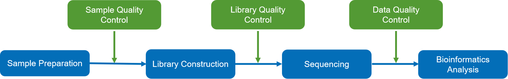
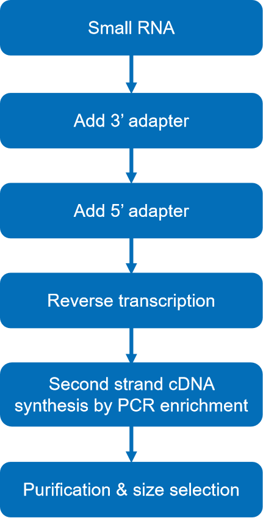
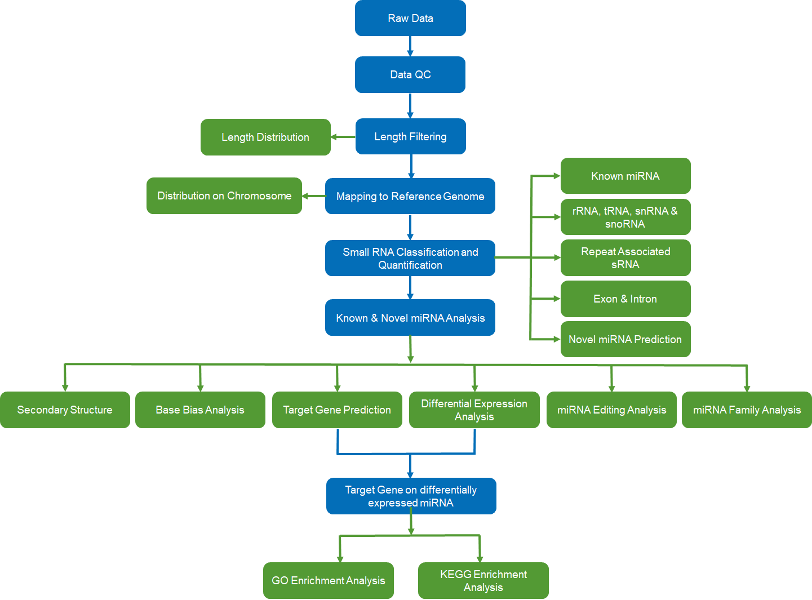

small RNA-seq Standard Analysis Report
| Contract ID | HXXXSCXXXXXXXX |
| Contract Name | demo_gn |
| Batch ID | XXXXSCXXXXXXX-ZXX-JXXX |
| Reference Genome and Version | ensembl_110_bos_taurus_ars_ucd1_2_toplevel |
| Report Time | 2025-04-19 |
| Reminder | Partial results are presented in this report, while full results will be delivered in data release. Hyperlink of results in this report will be only valid in data release, after statement confirmation. |
1 Introduction
Small RNA is a special kind of molecule in organisms that induces gene silencing and plays an important role in the regulation of cell growth, gene transcription, and translation. Small RNA digitalization analysis, based on mechanism of SBS (sequencing by synthesis), has the benefits of small sample requirements, high throughput, high accuracy, and a simple automatic platform.
Next-generation sequencing can obtain millions of small RNA sequence tags in one shot, comprehensively identifying small RNAs of a certain species under certain status, predicting novel miRNA and giving differential expression profile between samples. This expression can be a powerful tool for researching small RNA functions.
Small RNA sequencing projects are carried out as follows:

2 Library Construction and Sequencing
2.1 Sample Quality Control
Methods of sample quality control refer to QC report.
2.2 Library Construction, Quality Control and Sequencing
Briefly, 3’ and 5’ adaptors were ligated to 3’ and 5’ ends of small RNA, respectively. Then the first strand cDNA was synthesized after hybridization with reverse transcription primer. The double-stranded cDNA library was generated through PCR enrichment. After purification and size selection, libraries with insertions between 18~40 bp were ready for sequencing on Illumina sequencing platform with SE50. The experimental procedures of RNA library preparation are shown in Figure 1.

Figure 1. Workflow of library construction
The library was checked with Qubit and real-time PCR for quantification and bioanalyzer for size distribution detection. Quantified libraries will be pooled and sequenced on Illumina platforms, according to effective library concentration and data amount required.
Method details involved in the project are available at methods
3 Bioinformatics Analysis Pipeline
Considering that data is obtained from animal with reference genome, the small RNA bioinformatic analysis process is shown as follows:

4 Analysis Results
4.1 Raw Data
Original image data file from high-throughput sequencing (like Illumina) is transformed into sequenced reads (called Raw Data or Raw Reads) by CASAVA base recognition (Base Calling). Raw data are stored in FASTQ(fq) format files, which contain sequences of reads and corresponding base quality. Each read has four descriptive sentences in as follow:
FASTQ file:
@HWI-ST1276:71:C1162ACXX:1:1101:1208:2458 1:N:0:CGATGT
NAAGAACACGTTCGGTCACCTCAGCACACTTGTGAATGTCATGGGATCCAT
+
#55???BBBBB?BA@DEEFFCFFHHFFCFFHHHHHHHFAE0ECFFD/AEHH
(1) Line 1: the at sign (@) followed by sequence identifiers and optional description info (such as FASTA title line).
(2) Line 2: base sequences (raw read, A, G, C, and T).
(3) Line 3: the plus sign (+) optionally followed by the same Illumina sequence identifiers and description information as Line 1.
(4) Line 4: the quality values for each base, corresponding to the data in Line 2.
Illumina Sequence Identifier:
| ID Symbol | meaning |
|---|---|
| HWI-ST1276 | Instrument – unique identifier of the sequencer |
| 71 | run number – Run number on instrument |
| C1162ACXX | FlowCell ID – ID of flowcell |
| 1 | LaneNumber – positive integer |
| 1101 | TileNumber – positive integer |
| 1208 | X – x coordinate of the spot. Integer which can be negative |
| 2458 | Y – y coordinate of the spot. Integer which can be negative |
| 1 | ReadNumber - 1 for single reads; 1 or 2 for paired ends |
| N | whether it is filtered - NB :Y if the read is filtered out, not in the delivered fastq file, N otherwise |
| 0 | control number - 0 when none of the control bits are on, otherwise it is an even number |
| CGATGT | Illumina index sequences |
The details of sequencing identifier of Illumina are as follows:
(1) HWI-ST1276:71 HWI-ST1276, Instrument - unique identifier of the sequencer; 71, run number - Run number on instrument
(2) C1162ACXX:1:1101:1208:2458 means the coordinate of read on C1162ACXX (Flowcell ID) flowcell, line 1, 1101 tile is(x=1208, y=2458)
(3) 1:N:0:CGATGT the first number is 1 or 2, 1 means single reads or the first read of paired ends, 2 means the second of paired ends; the second letter means whether reads is adjusted(Y means yes, N means no); the third number represent the number of Control Bits in sequence; six bases on the fourth place is Illumina index sequence.
The relationship of Phred quality scores Q and base-calling error which were predicted by Illumina Casava 1.8 version Phred quality scores Q were logarithmically linked to base-calling error e :
| Error Rate | Quality Scores | ASCII code |
|---|---|---|
| 5% | 13 | . |
| 1% | 20 | 5 |
| 0.1% | 30 | ? |
| 0.01% | 40 | I |
4.2 Data Quality Control
4.2.1 Data Quality summary
Table 4.1 Summary of the data production
| Sample | Reads | Bases | Error rate | Q20 | Q30 | GC content |
|---|---|---|---|---|---|---|
| sample1 | 11633119 | 0.58G | 0.01% | 99.32% | 97.89% | 53.25% |
| sample2 | 11404427 | 0.57G | 0.01% | 99.05% | 97.55% | 53.79% |
| sample3 | 11527074 | 0.58G | 0.01% | 99.09% | 97.11% | 51.82% |
| sample4 | 12455390 | 0.62G | 0.01% | 99.30% | 97.91% | 53.39% |
| sample5 | 11520541 | 0.58G | 0.01% | 98.64% | 96.56% | 54.71% |
| sample6 | 11706933 | 0.59G | 0.01% | 98.92% | 96.98% | 53.72% |
| sample7 | 11522486 | 0.58G | 0.01% | 99.16% | 97.70% | 53.59% |
| sample8 | 12705794 | 0.64G | 0.01% | 99.01% | 96.93% | 52.38% |
4.2.2 Data Filtering
The sequenced reads/raw reads often contain low quality reads or reads with adapters, which will negatively affect the quality of downstream analysis. To avoid this, it's necessary to filter raw reads to get clean reads.

Data filtering was performed as follows:
(1)Reads in which more than 50% of bases had a Qphred less than or equal to 5 were discarded.
(2)Reads in which N accounted for more than 10% were discarded. (N indicates that base information was indeterminable)
(3)Reads with 5' primer contamination were discarded.
(4)Reads lacking a 3' primer or insert tag were discarded.
(5)The 3' primer sequence was trimmed.
(6)Reads with poly(A), poly(T), poly(G), or poly(C) tails were discarded.
Table 4.2 Data filtering summary
| Sample | total reads | N% > 10% | low quality | 5' adapter contamine | 3' adapter null or insert null | with ployA/T/G/C | clean reads |
|---|---|---|---|---|---|---|---|
| sample1 | 11633119 (100.00%) | 0 (0.00%) | 0 (0.00%) | 2818 (0.02%) | 500327 (4.30%) | 9224 (0.08%) | 11120750 (95.60%) |
| sample2 | 11404427 (100.00%) | 0 (0.00%) | 0 (0.00%) | 18197 (0.16%) | 748828 (6.57%) | 5622 (0.05%) | 10631780 (93.23%) |
| sample3 | 11527074 (100.00%) | 214 (0.00%) | 0 (0.00%) | 2902 (0.03%) | 306566 (2.66%) | 8844 (0.08%) | 11208548 (97.24%) |
| sample4 | 12455390 (100.00%) | 0 (0.00%) | 0 (0.00%) | 13340 (0.11%) | 601503 (4.83%) | 8228 (0.07%) | 11832319 (95.00%) |
| sample5 | 11520541 (100.00%) | 0 (0.00%) | 0 (0.00%) | 12980 (0.11%) | 676838 (5.88%) | 8440 (0.07%) | 10822283 (93.94%) |
| sample6 | 11706933 (100.00%) | 213 (0.00%) | 0 (0.00%) | 53673 (0.46%) | 453840 (3.88%) | 4673 (0.04%) | 11194534 (95.62%) |
| sample7 | 11522486 (100.00%) | 0 (0.00%) | 0 (0.00%) | 14800 (0.13%) | 445270 (3.86%) | 6379 (0.06%) | 11056037 (95.95%) |
| sample8 | 12705794 (100.00%) | 201 (0.00%) | 0 (0.00%) | 2369 (0.02%) | 331195 (2.61%) | 7984 (0.06%) | 12364045 (97.31%) |
-
(1) Sample: Sample ID
(2) Total Reads: Total sequenced reads
(3) N% > 10%: Percentage of reads with N > 10%
(4) Low Quality: Percentage of low quality reads
(5) 5' Adapter Contamination: Percentage of reads with 5' adapter contamination
(6) 3' Adapter or Insert Missing: Percentage of reads without a 3' adapter or insert
(7) With Poly(A)/(T)/(G)/(C) : Percentage of reads with poly(A), poly(T), poly(G), or poly(C) tails
(8) Clean Reads: Total clean reads followed by clean reads as a percentage of raw reads
4.2.3 Length distribution
The length of sRNA typically ranges from 18 to 40 nucleotides(nt). Analyzing length distribution helps determining the composition of small RNA samples. For example, miRNA is normally 21 or 22 nt, siRNA is 24 nt, and piRNA is between 28 and 30 nt.
Length distribution varies between plants and animals. In plants, there are often small RNA peaks at 21 or 24 nt, whereas peaks at 22 nt are normal in animals.
Table 4.3 Type and quantity of sRNA
| Sample | Total reads | Total bases (bp) | Uniq reads | Uniq bases (bp) |
|---|---|---|---|---|
| sample1 | 10621276 | 233942085 | 327721 | 7444772 |
| sample2 | 10187736 | 223803096 | 250645 | 5523314 |
| sample3 | 10864438 | 238797929 | 302160 | 7052269 |
| sample4 | 11508015 | 256755806 | 304731 | 7089406 |
| sample5 | 10357013 | 228197462 | 278503 | 6287719 |
| sample6 | 10992653 | 244352346 | 248001 | 5692089 |
| sample7 | 10916438 | 245733843 | 331446 | 7882305 |
| sample8 | 12061047 | 270335750 | 376618 | 9028511 |
-
(1) Sample: Sample ID
(2) Total reads: Total number of sRNA reads
(3) Total bases (bp): Total reads multiplied by sequence length
(4) Unique reads: Types of sRNA
(5) Unique bases (bp): Unique reads multiplied by sequence length
Figure 4.1 Length distribution of total sRNA
The x-axis is the length of sRNA reads, the y-axis is the percentage of one length read accounted for total sRNA.
4.3 Mapping to genome
Small RNA reads are mapped to the genome using Bowtie, to analyze their expression level and distribution on genome.
Table 4.4 Statistics of mapping results
| Sample | Total sRNA | Mapped sRNA | "+" Mapped sRNA | "-" Mapped sRNA |
|---|---|---|---|---|
| sample1 | 10621276 (100.00%) | 9774752 (92.03%) | 3378602 (31.81%) | 6396150 (60.22%) |
| sample2 | 10187736 (100.00%) | 9394331 (92.21%) | 2835943 (27.84%) | 6558388 (64.38%) |
| sample3 | 10864438 (100.00%) | 10129062 (93.23%) | 3212296 (29.57%) | 6916766 (63.66%) |
| sample4 | 11508015 (100.00%) | 10293397 (89.45%) | 3202266 (27.83%) | 7091131 (61.62%) |
| sample5 | 10357013 (100.00%) | 9381268 (90.58%) | 2325326 (22.45%) | 7055942 (68.13%) |
| sample6 | 10992653 (100.00%) | 9916248 (90.21%) | 3030700 (27.57%) | 6885548 (62.64%) |
| sample7 | 10916438 (100.00%) | 9878855 (90.50%) | 2950903 (27.03%) | 6927952 (63.46%) |
| sample8 | 12061047 (100.00%) | 11028744 (91.44%) | 3706990 (30.74%) | 7321754 (60.71%) |
-
(1) Sample: Sample ID
(2) Total sRNA: Number of total sRNA after length filtering
(3) Mapped sRNA: Number and percentage of sRNA mapped to genome
(4) + Mapped sRNA: Number and percentage of mapped sRNA in the same direction as the genome
(5) – Mapped sRNA: Number and percentage of mapped sRNA in the opposite direction to the genome
Density of small RNA reads on each chromosome is determined by each sample. Circos is used to graphically demonstrate distribution of reads on each chromosome. The longest 10 contigs or scaffolds were chosen for analysis
Figure 4.2 Reads distribution per chromosome
The chromosome is shown as the outer circle. Grey background in the middle area shows the distribution of 10,000 reads on the chromosome. Red represents the number of sRNAs on the sense strand of the chromosome, and blue represents the number of sRNAs on the antisense strand. All reads are shown in the center area of the circle. Yellow represents the number of sRNAs on the sense strand of the chromosome, and green represents the number of sRNAs on the antisense strand.
Result Directory: Mapping_Stat
4.4 Analysis of known miRNA
The reads mapped to reference genome were compared with specific sequences in the miRBase to obtain detail information, including the secondary structure of the mapped miRNAs, the sequence of miRNAs in each sample, length, the number of occurrences and other information. Mature miRNA is developed from precursor through Dicer enzyme digestion. Specificity of enzyme digestion sites makes the first base of the mature miRNA sequence highly biased, so we have also analyzed first base distribution analysis of miRNAs with different lengths , as well as distribution of other bases.
Table 4.5 Summary of known miRNA in each sample
| Types | Total | sample1 | sample2 | sample3 | sample4 | sample5 | sample6 | sample7 | sample8 |
|---|---|---|---|---|---|---|---|---|---|
| Mapped mature | 660 | 517 | 485 | 508 | 497 | 455 | 486 | 466 | 499 |
| Mapped hairpin | 755 | 614 | 581 | 625 | 599 | 563 | 585 | 565 | 607 |
| Mapped uniq sRNA | 27796 | 3733 | 3465 | 3688 | 3694 | 3241 | 3169 | 3169 | 3637 |
| Mapped total sRNA | 38700107 | 5055521 | 4372551 | 5779675 | 4731984 | 4397013 | 4679559 | 4181033 | 5502771 |
-
(1) Mapped mature: The number of sRNAs align to miRNA mature sequence
(2) Mapped hairpin: The number of sRNAs align to miRNA hairpin sequence
(3) Mapped uniq sRNA: The number of mapped unique sRNAs
(4) Mapped total sRNA: The number of mapped total sRNAs

Figure 4.3 The secondary structure of the known miRNAs on partial schematic matches.
The entire sequence is a miRNA precursor, the red section is the mature sequence.
Table 4.6 Known miRNA expression profile
| miRNA | sample1 | sample2 | sample3 | sample4 | sample5 | sample6 | sample7 | sample8 |
|---|---|---|---|---|---|---|---|---|
| bta-let-7a-3p | 36.00 | 45.00 | 66.00 | 50.00 | 22.00 | 23.00 | 31.00 | 145.00 |
| bta-let-7a-5p | 116922.00 | 153434.00 | 169684.00 | 150754.00 | 93233.00 | 115768.00 | 90566.00 | 122771.00 |
| bta-let-7b | 100551.00 | 144339.00 | 52437.00 | 54768.00 | 54210.00 | 112892.00 | 97260.00 | 56382.00 |
| bta-let-7c | 18340.00 | 30291.00 | 23649.00 | 19360.00 | 15401.00 | 21691.00 | 12981.00 | 16291.00 |
| bta-let-7d | 20437.00 | 37203.00 | 27660.00 | 29035.00 | 16940.00 | 20095.00 | 17770.00 | 25718.00 |
(1) miRNA: Mature miRNA id
(2) Columns 2-n+1 show the corresponding sample’s read count
>bta-let-7a-1
total read count 1013491
bta-let-7a-5p read count 1013069
bta-let-7a-3p read count 418
remaining read count 4
exp fffff5555555555555555555555fffffffffffffffffffffffffffff333333333333333333333fff
pri_seq ugggaugagguaguagguuguauaguuuuagggucacacccaccacugggagauaacuauacaaucuacugucuuuccua
pri_struct (((((.(((((((((((((((((((((.....(((...((((....)))).))))))))))))))))))))))))))))) #MM +/-
sample2_119805_x2 ....augagguaguagguuguau......................................................... 0 +
sample4_33971_x1 ....augagguaguagguuguau......................................................... 0 +
Figure 4.4 miRNA first nucleotide bias
The length of miRNAs is shown in the X axis, the Y axis is the percentage.
Figure 4.5 miRNA nucleotide bias at each position
The X axis shown each position of miRNA nucleotide, The Y axis shown the percentage
Result Directory: Known_miRNA
4.5 ncRNA Analysis
Small RNA reads are annotated with sequences from the non-coding transcript sequences of the species with reference. For those species without reference, small RNA reads are annotated with sequences from Rfam. The matched reads from rRNA, tRNA, snRNA, and snoRNA are removed.
The following table shows number of reads mapped to different kinds of ncRNAs.
Table 4.7 Statistics of annotated ncRNA
| Types | sample1 | sample2 | sample3 | sample4 | sample5 | sample6 | sample7 | sample8 |
|---|---|---|---|---|---|---|---|---|
| rRNA | 16550 | 11839 | 25805 | 37277 | 22627 | 10324 | 13166 | 26900 |
| rRNA:+ | 16472 | 11744 | 25793 | 37261 | 22593 | 10237 | 13119 | 26729 |
| rRNA:- | 78 | 95 | 12 | 16 | 34 | 87 | 47 | 171 |
| tRNA | 9821 | 3514 | 3946 | 5667 | 2760 | 5011 | 6420 | 13666 |
| tRNA:+ | 9795 | 3485 | 3910 | 5612 | 2739 | 4993 | 6379 | 13594 |
| tRNA:- | 26 | 29 | 36 | 55 | 21 | 18 | 41 | 72 |
| snRNA | 1638 | 1000 | 3126 | 1949 | 1487 | 1134 | 889 | 2813 |
| snRNA:+ | 1535 | 948 | 3071 | 1893 | 1452 | 1067 | 814 | 2741 |
| snRNA:- | 103 | 52 | 55 | 56 | 35 | 67 | 75 | 72 |
| snoRNA | 31640 | 23594 | 59786 | 91272 | 28246 | 73341 | 73174 | 97140 |
| snoRNA:+ | 31629 | 23584 | 59770 | 91255 | 28237 | 73339 | 73172 | 97139 |
| snoRNA:- | 11 | 10 | 16 | 17 | 9 | 2 | 2 | 1 |
(1) Types: The kinds of ncRNA
(2) Columns 2-n+1 show the corresponding samples reads mapping to that kind of ncRNA
Result Directory: ncRNA
4.6 Repeat Sequences Alignment
If a species repeat transposon information, information of its repeated sequence is used to annotate the sRNA. Otherwise we will predict repeat sequences from the beginning based on reference genome. The sRNA is then aligned with the predicted repeating sequences and potential repetitive reads of sRNA are removed.. Statistics on the various repeats of sRNAs (uniquely expressed) and total number of sRNAs are calculated.
Results of the repeat classification are shown in the following figures.
Figure 4.6 Total repeat reads
Figure 4.7 Uniq repeat reads
Result Directory: Repeat
4.7 Exon and Intron Alignment
Small RNA reads are aligned to the exons and introns of mRNAs to find the degraded fragments of mRNA in the small RNA reads. The results are shown in the following table.
Table 4.8 sRNAs mapped to exon and intron
| Types | sample1 | sample2 | sample3 | sample4 | sample5 | sample6 | sample7 | sample8 |
|---|---|---|---|---|---|---|---|---|
| exon | 113510 | 81048 | 107791 | 143043 | 98582 | 146507 | 229064 | 256256 |
| exon:+ | 106663 | 76057 | 104634 | 140311 | 85334 | 139389 | 217658 | 237312 |
| exon:- | 6847 | 4991 | 3157 | 2732 | 13248 | 7118 | 11406 | 18944 |
| intron | 130904 | 86999 | 174478 | 146113 | 85662 | 87926 | 116249 | 139086 |
| intron:+ | 100188 | 67653 | 121703 | 106374 | 66112 | 68289 | 87222 | 100925 |
| intron:- | 30716 | 19346 | 52775 | 39739 | 19550 | 19637 | 29027 | 38161 |
(1) Types: Types of exon and intron
(2) Columns 2-n+1 show each corresponding sample’s results
Result Directory: gene
| Q: Why reads are aligned exons and introns？ |
| A: The sequences of sRNA sequencing may have degraded fragments of mRNA. This part of the analysis is to annotate the sequencing reads as much as possible. On another hand, it is to remove the sequences from these genes before the new miRNA predicted. As these regions might be the product of degraded fragments. These regions can predict relatively few miRNAs compared to the gene intergenic region. In order to eliminate interference, this part of the reads is currently taken directly. |
4.8 Novel miRNA Prediction
The characteristic hairpin structure of miRNA precursors can be used to predict novel miRNA, which can be conducted by miREvo (Wen et al., 2012) and mirdeep2 (Friedlander et al., 2011). The results are shown in the following tables and figures.
Table 4.9 Summary of novel miRNA
| Types | Total | sample1 | sample2 | sample3 | sample4 | sample5 | sample6 | sample7 | sample8 |
|---|---|---|---|---|---|---|---|---|---|
| Mapped mature | 341 | 213 | 186 | 168 | 188 | 177 | 178 | 192 | 182 |
| Mapped star | 72 | 32 | 25 | 24 | 26 | 24 | 23 | 24 | 25 |
| Mapped hairpin | 366 | 224 | 199 | 180 | 202 | 186 | 189 | 207 | 196 |
| Mapped uniq sRNA | 3307 | 484 | 418 | 360 | 393 | 377 | 384 | 438 | 453 |
| Mapped total sRNA | 30061 | 5624 | 3468 | 2127 | 2674 | 2511 | 4933 | 4147 | 4577 |
(1) Type: The type of sRNA mapping
(2) Total:The total amount
(3) Columns 3-n+2 show the amount aligned to the predicted hairpin in each corresponding sample

Figure 4.8 The secondary structure of the novel miRNAs on partial schematic matches.
The entire sequence is a miRNA precursor, the red section is the mature sequence
Table 4.10 Novel miRNA expression profile
| miRNA | sample1 | sample2 | sample3 | sample4 | sample5 | sample6 | sample7 | sample8 |
|---|---|---|---|---|---|---|---|---|
| novel_1001 | 0 | 5.00 | 5.00 | 0 | 3.00 | 0 | 0 | 0 |
| novel_1004 | 1.00 | 0 | 1.00 | 0 | 0 | 0 | 0 | 0 |
| novel_1008 | 0 | 0 | 0 | 1.00 | 1.00 | 0 | 1.00 | 0 |
| novel_1012 | 4.00 | 0 | 5.00 | 2.00 | 0 | 7.00 | 2.00 | 6.00 |
| novel_1014 | 1.00 | 0 | 0 | 0 | 0 | 0 | 0 | 0 |
(1) miRNA: Mature miRNA id
(2) Columns 2-n+1 show the corresponding sample’s read count
Figure 4.9 miRNA first nucleotide bias
The length of miRNAs is shown in the X axis, the Y axis is the percentage.
Figure 4.10 miRNA nucleotide bias at each position
The X axis shown each position of miRNA nucleotide, The Y axis shown the percentage
Result Directory: Novel_miRNA
4.9 small RNA annotation
After alignment and annotation, some small RNA reads may be mapped to multiple regions and annotated with multiple features. To denote each small RNA with a unique annotation, we follow below priority for annotation: known miRNA > rRNA > tRNA > snRNA > snoRNA > repeat > gene > novel miRNA.
The results of this process are shown below.
Table 4.11 Result table
| Types | sample1 | sample1(percent) | sample2 | sample2(percent) | sample3 | sample3(percent) | sample4 | sample4(percent) | sample5 | sample5(percent) | sample6 | sample6(percent) | sample7 | sample7(percent) | sample8 | sample8(percent) |
|---|---|---|---|---|---|---|---|---|---|---|---|---|---|---|---|---|
| total | 9774752 | 100.00% | 9394331 | 100.00% | 10129062 | 100.00% | 10293397 | 100.00% | 9381268 | 100.00% | 9916248 | 100.00% | 9878855 | 100.00% | 11028744 | 100.00% |
| known_miRNA | 5055521 | 51.72% | 4372551 | 46.54% | 5779675 | 57.06% | 4731984 | 45.97% | 4397013 | 46.87% | 4679559 | 47.19% | 4181033 | 42.32% | 5502771 | 49.89% |
| rRNA | 16550 | 0.17% | 11839 | 0.13% | 25805 | 0.25% | 37277 | 0.36% | 22627 | 0.24% | 10324 | 0.10% | 13166 | 0.13% | 26900 | 0.24% |
| tRNA | 9821 | 0.10% | 3514 | 0.04% | 3946 | 0.04% | 5667 | 0.06% | 2760 | 0.03% | 5011 | 0.05% | 6420 | 0.06% | 13666 | 0.12% |
| snRNA | 1638 | 0.02% | 1000 | 0.01% | 3126 | 0.03% | 1949 | 0.02% | 1487 | 0.02% | 1134 | 0.01% | 889 | 0.01% | 2813 | 0.03% |
| snoRNA | 31640 | 0.32% | 23594 | 0.25% | 59786 | 0.59% | 91272 | 0.89% | 28246 | 0.30% | 73341 | 0.74% | 73174 | 0.74% | 97140 | 0.88% |
| repeat | 81887 | 0.84% | 62495 | 0.67% | 58075 | 0.57% | 37474 | 0.36% | 40180 | 0.43% | 93848 | 0.95% | 119335 | 1.21% | 87953 | 0.80% |
| novel_miRNA | 5624 | 0.06% | 3468 | 0.04% | 2127 | 0.02% | 2674 | 0.03% | 2511 | 0.03% | 4933 | 0.05% | 4147 | 0.04% | 4577 | 0.04% |
| exon:+ | 106663 | 1.09% | 76057 | 0.81% | 104634 | 1.03% | 140311 | 1.36% | 85334 | 0.91% | 139389 | 1.41% | 217658 | 2.20% | 237312 | 2.15% |
| exon:- | 6847 | 0.07% | 4991 | 0.05% | 3157 | 0.03% | 2732 | 0.03% | 13248 | 0.14% | 7118 | 0.07% | 11406 | 0.12% | 18944 | 0.17% |
| intron:+ | 100188 | 1.02% | 67653 | 0.72% | 121703 | 1.20% | 106374 | 1.03% | 66112 | 0.70% | 68289 | 0.69% | 87222 | 0.88% | 100925 | 0.92% |
| intron:- | 30716 | 0.31% | 19346 | 0.21% | 52775 | 0.52% | 39739 | 0.39% | 19550 | 0.21% | 19637 | 0.20% | 29027 | 0.29% | 38161 | 0.35% |
| other | 4327657 | 44.27% | 4747823 | 50.54% | 3914253 | 38.64% | 5095944 | 49.51% | 4702200 | 50.12% | 4813665 | 48.54% | 5135378 | 51.98% | 4897582 | 44.41% |
-
(1) total: The quantity of sRNA reads mapped to genome.
(2) known_miRNA: The number and percentage of sRNAs reads mapped to known miRNA.
(3) rRNA/tRNA/snRNA/snoRNA: The number and percentage of sRNAs reads mapped to rRNA/tRNA/snRNA/snoRNA.
(4) repeat: The number and percentage of sRNAs reads mapped to repeat region.
(5) novel_miRNA: The number and percentage of sRNAs reads mapped to novel miRNA.
(6) exon: +/exon : -/exon : +/intron : -/intron: The number and percentage of sRNAs reads mapped to exon (+/-) and intron(+/-).
(7) other: The number and percentage of sRNAs reads mapped genome but could not mapped to known miRNA, ncRNA, repeat, novel miRNA, exon/intron.
Result Directory: Category
4.10 miRNA Base Edit
Position 2~8 of a mature miRNA is called a seed region, which is highly conserved. Targets of a miRNA can be different depending on change of nucleotides in seed region. In our analysis workflow, miRNAs with base edits can be detected by aligning unannotated sRNA reads with mature miRNAs from miRBase.
>pre-miRNA: bta-let-7a-1 149245 32283 21.63%
mature miRNA: bta-let-7a-5p 141999 0 0.0%
site1: 886 0.62%
U->A: 245 0.17%
U->G: 74 0.05%
U->C: 567 0.4%
site2: 121 0.09%
G->A: 99 0.07%
G->C: 8 0.01%
G->U: 14 0.01%
mature miRNA: mature miRNA, the number of reads mapped to mature miRNA, the number and percentage of reads with base edit.
site[1-n]: the details of each base of this mature miRNA, each line represent the number and percentage of reads with base edit.
Result Directory: miRNA_editing
4.11 miRNA Family Analysis
The following table explores the occurrence of known miRNA and novel miRNA families, identified from samples of other species. A "+" means that the miRNA family exists in this species, and a "-" means the miRNA family does not exist in this species.
Table 4.12 Result table
| Species | mir-1468 | mir-126 | mir-140 | mir-2319 | bpcv-mir-B1 | mir-337 | mir-431 | mir-184 | mir-1788 | mir-924 | mir-197 | mir-499 | mir-1267 | mir-142 | mir-1228 | mir-958 | mir-787 | mir-317 | mir-493 | mir-1825 | mir-629 | mir-22 | mir-223 | mir-4523 | mir-7180 | mir-3432 | mir-25 | mir-210 | mir-BART19 | mir-8356 | mir-6516 | mir-2404 | mir-1234 | mir-383 | mir-188 | mir-181 | mir-552 | mir-664 | mir-1281 | mir-96 | mir-1247 | mir-544 | mir-2284 | mir-1225 | mir-28 | mir-940 | mir-147 | mir-192 | mir-1306 | mir-330 | mir-3926 | mir-2432 | mir-744 | mir-504 | mir-124 | mir-190 | mir-582 | mir-5366 | mir-186 | mir-2318 | mir-9228 | mir-3119 | mir-617 | mir-154 | mir-4451 | mir-1296 | mir-266 | mir-4677 | mir-329 | mir-3473 | mir-1260b | mir-32 | mir-128 | mir-217 | mir-361 | mir-467 | mir-541 | mir-368 | mir-2904 | mir-873 | mir-548 | mir-708 | mir-641 | mir-134 | mir-322 | mir-145 | mir-2363 | mir-7177 | mir-657 | mir-601 | mir-17 | mir-737 | mir-378 | mir-208 | mir-320 | mir-105 | mir-346 | mir-2331 | mir-2366 | mir-19 | mir-627 | mir-193 | mir-4657 | mir-199 | mir-374 | mir-204 | mir-31 | mir-H7 | mir-497 | mir-615 | mir-484 | mir-339 | mir-8536 | mir-1292 | mir-6827 | mir-4449 | mir-296 | mir-138 | mir-33 | mir-335 | mir-1538 | mir-1662 | mir-H4 | mir-8338 | mir-564 | mir-23 | mir-1784 | mir-652 | mir-4018 | mir-877 | mir-4680 | mir-3604 | mir-7 | mir-4488 | mir-219 | mir-136 | mir-21 | mir-2411 | mir-1224 | mir-454 | mir-3956 | mir-103 | mir-10 | mir-671 | mir-486 | mir-2450 | mir-451 | mir-490 | mir-4872 | mir-761 | mir-2954 | mir-143 | let-7 | mir-1839 | MIR164 | mir-3017 | mir-1298 | mir-5583 | mir-149 | mir-1271 | mir-345 | mir-540 | mir-3154 | mir-483 | mir-122 | mir-935 | mir-584 | mir-24 | mir-H3 | mir-187 | mir-146 | mir-455 | mir-305 | mir-194 | mir-379 | mir-500 | mir-1249 | mir-BHRF1-2 | mir-362 | mir-542 | mir-H1 | mir-1434 | mir-2483 | mir-425 | mir-191 | mir-466 | mir-1289 | mir-1343 | mir-150 | mir-H20 | mir-885 | MIR1219 | mir-8 | mir-3431 | mir-133 | lin-4 | mir-338 | mir-85 | mir-216 | MIR6426 | mir-139 | mir-331 | mir-3943 | mir-1277 | mir-3957 | mir-196 | mir-5879 | mir-1248 | mir-144 | mir-6526 | mir-631 | mir-3150 | mir-786 | mir-135 | mir-218 | mir-182 | mir-1842 | mir-3960 | mir-2387 | mir-1956 | mir-299 | mir-611 | mir-127 | mir-29 | mir-3167 | mir-3064 | mir-618 | mir-1005 | mir-3156 | mir-423 | mir-769 | mir-662 | mir-1490 | mir-432 | mir-9186 | mir-101 | mir-205 | mir-673 | mir-7578 | mir-375 | mir-27 | mir-30 | mir-7132 | mir-214 | mir-4654 | mir-2329 | mir-1911 | mir-412 | MIR6143 | mir-645 | mir-148 | mir-34 | mir-485 | mir-939 | mir-6529 | mir-452 | mir-302 | mir-26 | mir-9 | mir-340 | mir-433 | mir-326 | mir-365 | mir-654 | mir-95 | mir-1301 | mir-342 | mir-2332 | mir-3155 | mir-491 | mir-450 | mir-1641 | mir-628 | mir-221 | mir-m22-1 | mir-505 | mir-760 | mir-4888 | mir-2300 | mir-224 | mir-4865 | mir-207 | mir-290 | mir-1388 | mir-155 | mir-6536 | mir-599 | mir-1544 | mir-1003 | MIR8139 | mir-183 | mir-1291 | mir-4041 | mir-2320 | mir-1 | mir-185 | mir-1537 | mir-130 | mir-3202 | mir-8186 | mir-874 | mir-1251 | mir-1307 | mir-677 | mir-15 | mir-153 | mir-2887 | mir-767 | mir-351 | mir-132 | mir-324 | mir-328 | mir-503 | mir-4429 | mir-1814 | mir-370 | mir-129 | mir-5892 | mir-363 | mir-3132 | mir-6511 | mir-202 | mir-3578 | mir-3533 | mir-602 | mir-2208 | mir-3547 | mir-2355 |
|---|---|---|---|---|---|---|---|---|---|---|---|---|---|---|---|---|---|---|---|---|---|---|---|---|---|---|---|---|---|---|---|---|---|---|---|---|---|---|---|---|---|---|---|---|---|---|---|---|---|---|---|---|---|---|---|---|---|---|---|---|---|---|---|---|---|---|---|---|---|---|---|---|---|---|---|---|---|---|---|---|---|---|---|---|---|---|---|---|---|---|---|---|---|---|---|---|---|---|---|---|---|---|---|---|---|---|---|---|---|---|---|---|---|---|---|---|---|---|---|---|---|---|---|---|---|---|---|---|---|---|---|---|---|---|---|---|---|---|---|---|---|---|---|---|---|---|---|---|---|---|---|---|---|---|---|---|---|---|---|---|---|---|---|---|---|---|---|---|---|---|---|---|---|---|---|---|---|---|---|---|---|---|---|---|---|---|---|---|---|---|---|---|---|---|---|---|---|---|---|---|---|---|---|---|---|---|---|---|---|---|---|---|---|---|---|---|---|---|---|---|---|---|---|---|---|---|---|---|---|---|---|---|---|---|---|---|---|---|---|---|---|---|---|---|---|---|---|---|---|---|---|---|---|---|---|---|---|---|---|---|---|---|---|---|---|---|---|---|---|---|---|---|---|---|---|---|---|---|---|---|---|---|---|---|---|---|---|---|---|---|---|---|---|---|---|---|---|---|---|---|---|---|---|---|---|---|---|---|---|---|---|---|---|---|---|---|---|---|---|---|---|---|---|---|---|---|---|---|
| Eugenia uniflora | - | - | - | - | - | - | - | - | - | - | - | - | - | - | - | - | - | - | - | - | - | - | - | - | - | - | - | - | - | - | - | - | - | - | - | - | - | - | - | - | - | - | - | - | - | - | - | - | - | - | - | - | - | - | - | - | - | - | - | - | - | - | - | - | - | - | - | - | - | - | - | - | - | - | - | - | - | - | - | - | - | - | - | - | - | - | - | - | - | - | - | - | - | - | - | - | - | - | - | - | - | - | - | - | - | - | - | - | - | - | - | - | - | - | - | - | - | - | - | - | - | - | - | - | - | - | - | - | - | - | - | - | - | - | - | - | - | - | - | - | - | - | - | - | - | - | - | - | - | - | - | - | - | - | - | - | - | - | - | - | - | - | - | - | - | - | - | - | - | - | - | - | - | - | - | - | - | - | - | - | - | - | - | - | - | - | - | - | - | - | - | - | - | - | - | - | - | - | - | - | - | - | - | - | - | - | - | - | - | - | - | - | - | - | - | - | - | - | - | - | - | - | - | - | - | - | - | - | - | - | - | - | - | - | - | - | - | - | - | - | - | - | - | - | - | - | - | - | - | - | - | - | - | - | - | - | - | - | - | - | - | - | - | - | - | - | - | - | - | - | - | - | - | - | - | - | - | - | - | - | - | - | - | - | - | - | - | - | - | - | - | - | - | - | - | - | - | - | - | - | - | - | - | - | - | - | - | - | - | - | - | - | - | - | - | - | - | - | - | - | - | - | - | - | - | - | - | - |
| Salicornia europaea | - | - | - | - | - | - | - | - | - | - | - | - | - | - | - | - | - | - | - | - | - | - | - | - | - | - | - | - | - | - | - | - | - | - | - | - | - | - | - | - | - | - | - | - | - | - | - | - | - | - | - | - | - | - | - | - | - | - | - | - | - | - | - | - | - | - | - | - | - | - | - | - | - | - | - | - | - | - | - | - | - | - | - | - | - | - | - | - | - | - | - | - | - | - | - | - | - | - | - | - | - | - | - | - | - | - | - | - | - | - | - | - | - | - | - | - | - | - | - | - | - | - | - | - | - | - | - | - | - | - | - | - | - | - | - | - | - | - | - | - | - | - | - | - | - | - | - | - | - | - | - | - | - | - | - | - | - | - | - | - | - | - | - | - | - | - | - | - | - | - | - | - | - | - | - | - | - | - | - | - | - | - | - | - | - | - | - | - | - | - | - | - | - | - | - | - | - | - | - | - | - | - | - | - | - | - | - | - | - | - | - | - | - | - | - | - | - | - | - | - | - | - | - | - | - | - | - | - | - | - | - | - | - | - | - | - | - | - | - | - | - | - | - | - | - | - | - | - | - | - | - | - | - | - | - | - | - | - | - | - | - | - | - | - | - | - | - | - | - | - | - | - | - | - | - | - | - | - | - | - | - | - | - | - | - | - | - | - | - | - | - | - | - | - | - | - | - | - | - | - | - | - | - | - | - | - | - | - | - | - | - | - | - | - | - | - | - | - | - | - | - | - | - | - | - | - | - | - |
| Caenorhabditis remanei | - | - | - | - | - | - | - | - | - | - | - | - | - | - | - | - | - | - | - | - | - | - | - | - | - | - | - | - | - | - | - | - | - | - | - | - | - | - | - | - | - | - | - | - | - | - | - | - | - | - | - | - | - | - | + | - | - | - | - | - | - | - | - | - | - | - | - | - | - | - | - | - | - | - | - | - | - | - | - | - | - | - | - | - | - | - | - | - | - | - | - | - | - | - | - | - | - | - | - | - | - | - | - | - | - | - | - | - | - | - | - | - | - | - | - | - | - | - | - | - | - | - | - | - | - | - | - | - | - | - | - | - | - | - | - | - | - | - | - | - | - | - | - | - | - | - | - | - | - | - | - | - | + | - | - | - | - | - | - | - | - | - | - | - | - | - | - | - | - | - | - | - | - | - | - | - | - | - | - | - | - | - | - | - | - | - | - | - | - | - | - | - | - | - | - | + | - | + | - | - | - | - | - | - | - | - | - | - | - | - | - | - | + | - | - | - | - | - | - | - | - | - | - | - | - | - | - | - | - | - | - | - | - | - | - | - | - | - | - | - | - | - | - | - | - | - | - | - | - | - | - | + | - | - | - | - | - | - | + | - | - | - | - | - | - | - | - | - | - | - | - | - | - | - | - | - | - | - | - | - | - | - | - | - | - | - | - | - | - | - | - | - | - | - | + | - | - | - | - | - | - | - | - | - | - | - | - | - | - | - | - | - | - | - | - | - | - | - | - | - | - | - | - | - | - | - | - | - |
| BK polyomavirus | - | - | - | - | - | - | - | - | - | - | - | - | - | - | - | - | - | - | - | - | - | - | - | - | - | - | - | - | - | - | - | - | - | - | - | - | - | - | - | - | - | - | - | - | - | - | - | - | - | - | - | - | - | - | - | - | - | - | - | - | - | - | - | - | - | - | - | - | - | - | - | - | - | - | - | - | - | - | - | - | - | - | - | - | - | - | - | - | - | - | - | - | - | - | - | - | - | - | - | - | - | - | - | - | - | - | - | - | - | - | - | - | - | - | - | - | - | - | - | - | - | - | - | - | - | - | - | - | - | - | - | - | - | - | - | - | - | - | - | - | - | - | - | - | - | - | - | - | - | - | - | - | - | - | - | - | - | - | - | - | - | - | - | - | - | - | - | - | - | - | - | - | - | - | - | - | - | - | - | - | - | - | - | - | - | - | - | - | - | - | - | - | - | - | - | - | - | - | - | - | - | - | - | - | - | - | - | - | - | - | - | - | - | - | - | - | - | - | - | - | - | - | - | - | - | - | - | - | - | - | - | - | - | - | - | - | - | - | - | - | - | - | - | - | - | - | - | - | - | - | - | - | - | - | - | - | - | - | - | - | - | - | - | - | - | - | - | - | - | - | - | - | - | - | - | - | - | - | - | - | - | - | - | - | - | - | - | - | - | - | - | - | - | - | - | - | - | - | - | - | - | - | - | - | - | - | - | - | - | - | - | - | - | - | - | - | - | - | - | - | - | - | - | - | - | - | - | - |
| Bovine herpesvirus 5 | - | - | - | - | - | - | - | - | - | - | - | - | - | - | - | - | - | - | - | - | - | - | - | - | - | - | - | - | - | - | - | - | - | - | - | - | - | - | - | - | - | - | - | - | - | - | - | - | - | - | - | - | - | - | - | - | - | - | - | - | - | - | - | - | - | - | - | - | - | - | - | - | - | - | - | - | - | - | - | - | - | - | - | - | - | - | - | - | - | - | - | - | - | - | - | - | - | - | - | - | - | - | - | - | - | - | - | - | - | - | - | - | - | - | - | - | - | - | - | - | - | - | - | - | - | - | - | - | - | - | - | - | - | - | - | - | - | - | - | - | - | - | - | - | - | - | - | - | - | - | - | - | - | - | - | - | - | - | - | - | - | - | - | - | - | - | - | - | - | - | - | - | - | - | - | - | - | - | - | - | - | - | - | - | - | - | - | - | - | - | - | - | - | - | - | - | - | - | - | - | - | - | - | - | - | - | - | - | - | - | - | - | - | - | - | - | - | - | - | - | - | - | - | - | - | - | - | - | - | - | - | - | - | - | - | - | - | - | - | - | - | - | - | - | - | - | - | - | - | - | - | - | - | - | - | - | - | - | - | - | - | - | - | - | - | - | - | - | - | - | - | - | - | - | - | - | - | - | - | - | - | - | - | - | - | - | - | - | - | - | - | - | - | - | - | - | - | - | - | - | - | - | - | - | - | - | - | - | - | - | - | - | - | - | - | - | - | - | - | - | - | - | - | - | - | - | - | - |
| Saguinus labiatus | - | - | - | - | - | - | - | - | - | - | - | - | - | - | - | - | - | - | - | - | - | + | + | - | - | - | + | - | - | - | - | - | - | - | - | + | - | - | - | + | - | - | - | - | + | - | + | - | - | - | - | - | - | - | - | - | - | - | - | - | - | - | - | - | - | - | - | - | - | - | - | + | + | - | - | - | - | - | - | - | - | - | - | - | - | - | - | - | - | - | + | - | - | - | - | + | - | - | - | + | - | - | - | + | - | + | - | - | - | - | - | - | - | - | - | - | - | - | - | - | - | - | - | - | - | + | - | - | - | - | - | - | + | - | - | - | - | - | - | - | - | - | + | - | - | - | - | - | - | - | - | - | - | - | - | - | - | - | - | - | - | - | - | - | - | - | - | - | - | - | - | - | - | - | - | - | - | - | - | - | - | - | - | - | - | - | - | - | - | - | - | - | - | - | + | - | - | - | - | - | - | - | - | - | - | - | - | - | - | - | - | - | - | - | + | - | - | - | - | - | - | - | + | + | - | - | - | - | - | - | - | - | - | - | - | + | - | - | - | - | + | - | - | + | - | - | - | - | - | - | - | + | - | - | - | - | - | - | - | - | - | - | - | - | + | - | - | - | - | - | - | - | - | - | - | - | - | - | - | - | - | - | - | - | - | - | - | - | - | - | + | - | - | - | - | - | - | - | - | - | - | - | - | - | + | - | - | - | - | - | - | - | - | - | - | - | - | - | - | - | - | - | - | - | - | - | - | - |
| Arachis hypogaea | - | - | - | - | - | - | - | - | - | - | - | - | - | - | - | - | - | - | - | - | - | - | - | - | - | - | - | - | - | - | - | - | - | - | - | - | - | - | - | - | - | - | - | - | - | - | - | - | - | - | - | - | - | - | - | - | - | - | - | - | - | - | - | - | - | - | - | - | - | - | - | - | - | - | - | - | - | - | - | - | - | - | - | - | - | - | - | - | - | - | - | - | - | - | - | - | - | - | - | - | - | - | - | - | - | - | - | - | - | - | - | - | - | - | - | - | - | - | - | - | - | - | - | - | - | - | - | - | - | - | - | - | - | - | - | - | - | - | - | - | - | - | - | - | - | - | - | - | - | - | - | - | - | - | - | - | - | - | - | - | - | - | - | - | - | - | - | - | - | - | - | - | - | - | - | - | - | - | - | - | - | - | - | - | - | - | - | - | - | - | - | - | - | - | - | - | - | - | - | - | - | - | - | - | - | - | - | - | - | - | - | - | - | - | - | - | - | - | - | - | - | - | - | - | - | - | - | - | - | - | - | - | - | - | - | - | - | - | - | - | - | - | - | - | - | - | - | - | - | - | - | - | - | - | - | - | - | - | - | - | - | - | - | - | - | - | - | - | - | - | - | - | - | - | - | - | - | - | - | - | - | - | - | - | - | - | - | - | - | - | - | - | - | - | - | - | - | - | - | - | - | - | - | - | - | - | - | - | - | - | - | - | - | - | - | - | - | - | - | - | - | - | - | - | - | - | - | - |
| Raccoon polyomavirus | - | - | - | - | - | - | - | - | - | - | - | - | - | - | - | - | - | - | - | - | - | - | - | - | - | - | - | - | - | - | - | - | - | - | - | - | - | - | - | - | - | - | - | - | - | - | - | - | - | - | - | - | - | - | - | - | - | - | - | - | - | - | - | - | - | - | - | - | - | - | - | - | - | - | - | - | - | - | - | - | - | - | - | - | - | - | - | - | - | - | - | - | - | - | - | - | - | - | - | - | - | - | - | - | - | - | - | - | - | - | - | - | - | - | - | - | - | - | - | - | - | - | - | - | - | - | - | - | - | - | - | - | - | - | - | - | - | - | - | - | - | - | - | - | - | - | - | - | - | - | - | - | - | - | - | - | - | - | - | - | - | - | - | - | - | - | - | - | - | - | - | - | - | - | - | - | - | - | - | - | - | - | - | - | - | - | - | - | - | - | - | - | - | - | - | - | - | - | - | - | - | - | - | - | - | - | - | - | - | - | - | - | - | - | - | - | - | - | - | - | - | - | - | - | - | - | - | - | - | - | - | - | - | - | - | - | - | - | - | - | - | - | - | - | - | - | - | - | - | - | - | - | - | - | - | - | - | - | - | - | - | - | - | - | - | - | - | - | - | - | - | - | - | - | - | - | - | - | - | - | - | - | - | - | - | - | - | - | - | - | - | - | - | - | - | - | - | - | - | - | - | - | - | - | - | - | - | - | - | - | - | - | - | - | - | - | - | - | - | - | - | - | - | - | - | - | - | - |
| Lottia gigantea | - | - | - | - | - | - | - | + | - | - | - | - | - | - | - | - | - | - | - | - | - | - | - | - | - | - | + | - | - | - | - | - | - | - | - | - | - | - | - | - | - | - | - | - | - | - | - | - | - | - | - | - | - | - | + | + | - | - | - | - | - | - | - | - | - | - | - | - | - | - | - | - | - | - | - | - | - | - | - | - | - | - | - | - | - | - | - | - | - | - | - | - | - | - | - | - | - | - | - | - | - | - | - | - | - | - | + | - | - | - | - | - | - | - | - | - | - | - | + | - | - | - | - | - | - | - | - | - | - | - | - | - | + | - | - | - | - | - | - | - | - | - | + | - | - | - | - | - | - | - | - | - | + | - | - | - | - | - | - | - | - | - | - | - | - | - | - | - | - | - | - | - | - | - | - | - | - | - | - | - | - | - | - | - | - | - | - | - | - | - | - | - | + | - | + | - | - | - | + | - | - | - | - | - | - | - | - | - | - | - | - | - | - | - | - | + | - | - | - | - | - | - | - | + | - | - | - | - | - | - | - | - | - | - | - | - | - | - | - | + | - | - | - | - | - | - | - | - | - | - | - | + | - | - | - | - | - | - | + | - | - | - | - | - | - | - | - | - | - | - | - | - | - | - | - | - | - | - | - | - | - | - | - | - | - | - | - | - | - | - | - | - | - | - | + | - | - | - | - | - | - | - | - | - | - | + | - | - | - | - | - | - | - | - | - | - | - | - | - | - | - | - | - | - | - | - | - | - |
| Capra hircus | + | + | + | - | - | - | - | + | - | - | + | + | - | - | - | - | - | - | + | - | - | + | + | - | - | + | + | - | - | - | - | - | - | + | + | + | - | - | - | + | - | + | + | - | + | - | + | + | + | + | - | + | - | + | + | + | + | - | + | + | - | - | - | + | - | + | - | - | + | - | - | - | + | + | + | - | - | + | - | + | - | + | - | + | + | + | - | - | - | - | + | - | + | + | + | + | + | + | - | + | - | + | - | + | + | + | - | - | + | - | - | - | - | - | - | - | + | - | + | + | - | - | - | - | - | + | - | - | - | + | - | - | + | - | + | + | + | - | + | + | - | + | + | + | - | - | + | + | - | - | - | + | + | + | - | - | - | - | - | + | + | - | - | + | + | - | - | + | - | + | + | + | - | + | + | + | + | - | + | + | - | - | + | + | + | - | - | + | + | - | - | - | + | + | + | - | + | - | + | - | - | + | - | - | - | + | - | + | + | - | - | - | - | + | + | + | - | - | - | - | - | - | + | + | - | - | - | - | - | + | - | - | - | + | - | + | - | - | - | - | + | + | - | + | - | - | - | + | - | - | + | + | + | - | - | - | - | + | + | + | + | + | + | - | + | - | + | + | - | + | + | - | + | + | - | + | - | - | - | + | - | - | - | + | + | - | - | - | - | - | + | + | - | - | + | - | - | + | - | - | + | - | + | - | + | + | - | + | - | - | + | + | - | - | + | - | + | - | + | - | - | + | - | - | - | - | - | - |
Result Directory: miRNA_family
| Q: What is the miRNA family? What is the basis for determining that a miRNA belongs to a miRNA family? |
| A: In generally, the miRNAs in same miRNA family are able to regulate specific biological pathways. For example, if a set of miRNAs show consistently conserved at sites 2-7, which are sites to regulate the target gene, they will be defined as a miRNAs family. Sequence similarity comparison is the most straightforward method. |
4.12 miRNA Expression and Differential Expression
4.12.1 miRNA Expression
The expression of known and unique miRNAs in each sample are statistically analyzed and normalized by TPM (Zhou et al., 2010).
The normalized expression = (read count*1,000,000)/libsize. Libsize is the sample miRNA read count.
Table 4.13 Result table
| sRNA.readcount | sample1.readcount | sample2.readcount | sample3.readcount | sample4.readcount | sample5.readcount | sample6.readcount | sample7.readcount | sample8.readcount | group1.readcount | group2.readcount | sample1.tpm | sample2.tpm | sample3.tpm | sample4.tpm | sample5.tpm | sample6.tpm | sample7.tpm | sample8.tpm |
|---|---|---|---|---|---|---|---|---|---|---|---|---|---|---|---|---|---|---|
| bta-let-7a-3p | 36 | 45 | 66 | 50 | 22 | 23 | 31 | 145 | 49.25 | 55.25 | 6.90703268311935 | 9.7582702967143 | 11.2155878998761 | 10.2423315151829 | 4.963798117818 | 4.75061835494348 | 7.1317880819079 | 25.5980679637531 |
| bta-let-7a-5p | 116922 | 153434 | 169684 | 150754 | 93233 | 115768 | 90566 | 122771 | 147698.5 | 105584.5 | 22432.8909826578 | 33272.2321045792 | 28834.9366242814 | 30881.4489047977 | 21035.8995417512 | 23911.7211180477 | 20835.4038524539 | 21673.7958757099 |
| bta-let-7b | 100551 | 144339 | 52437 | 54768 | 54210 | 112892 | 97260 | 56382 | 88023.75 | 80186 | 19291.9178700093 | 31299.9772523877 | 8910.78458645154 | 11219.0402484708 | 12231.2498166779 | 23317.6872750556 | 22375.4099627859 | 9953.58805470572 |
| bta-let-7c | 18340 | 30291 | 23649 | 19360 | 15401 | 21691 | 12981 | 16291 | 22910 | 16591 | 3518.74942801136 | 6568.61701239496 | 4018.74906430559 | 3965.83076267883 | 3474.88430965978 | 4480.24620595996 | 2986.37874487892 | 2875.9870703276 |
| bta-let-7d | 20437 | 37203 | 27660 | 29035 | 16940 | 20095 | 17770 | 25718 | 28583.75 | 20130.75 | 3921.08408180306 | 8067.48732997027 | 4700.35092894806 | 5947.72191086672 | 3822.12455071986 | 4150.59460185171 | 4088.12497469366 | 4540.21456477106 |
| bta-let-7e | 46 | 52 | 205 | 57 | 43 | 68 | 61 | 69 | 90 | 60.25 | 8.82565287287472 | 11.276223453981 | 34.8362957496151 | 11.6762579273085 | 9.70196904846246 | 14.0453064407025 | 14.0335184837542 | 12.1811495827515 |
| bta-let-7f | 188528 | 132044 | 264848 | 205486 | 89914 | 111510 | 94521 | 249885 | 197726.5 | 136457.5 | 36171.3627134201 | 28633.8009568743 | 45006.4549107027 | 42093.1146745776 | 20287.0429075222 | 23032.2370765108 | 21745.2819770973 | 44114.2980215342 |
| bta-let-7g | 98488 | 52743 | 98524 | 60579 | 38490 | 57433 | 50821 | 117424 | 77583.5 | 66042 | 18896.1065248627 | 11437.3433391023 | 16742.493670415 | 12409.4040171653 | 8684.39043430977 | 11862.7071295421 | 11691.7613584078 | 20729.8450522465 |
| bta-let-7i | 151169 | 171169 | 145990 | 137110 | 88526 | 194673 | 165818 | 231737 | 151359.5 | 170188.5 | 29003.589546513 | 37118.0748537398 | 24808.5405682259 | 28086.5214809346 | 19973.8723717253 | 40209.4403048658 | 38147.7043924453 | 40910.4791428708 |
| bta-miR-1 | 189 | 182 | 212 | 779 | 147 | 168 | 2449 | 218 | 340.5 | 745.5 | 36.2619215863766 | 39.4667820889334 | 36.0258277996019 | 159.57552500655 | 33.1671965145112 | 34.7001688535002 | 563.411258470724 | 38.4853711455047 |
-
(1) Column 1 shows the miRNA mature ID of each
(2) Columns 2-n+1 show the read count of the corresponding sample
(3) Columns n+2-2n+1 show the read count of the corresponding sample (TPM normalization)
4.12.2 miRNA TPM distribution
TPM density distribution can represent gene expression mode of samples. The result is shown as below.
Figure 4.11 TPM distribution
The x axis is sample names and y axis is the value of miRNA log10(TPM+1).
| Q: What is the difference between TPM and FPKM in miRNA expression quantification |
| A: Both FPKM and TPM are methods for normalizing data. The statistical meanings of these two methods are different. FPKM (expected number of Fragments Per Kilobase of transcript sequence per Millions base pairs sequenced) taking the effect of sequencing depth and gene length on fragment counts into account. TPM (transcripts per million reads)=(readCount*1,000,000)/total_readCount. TPM does not need to consider the length of Small RNA, because the sRNA fragment obtained by sequencing is a complete sRNA tag. In the transcriptome, a read may be a part of a gene, so the expression level of the genes needs to be normalized by the length of the genes. |
4.12.3 RNA-Seq Correlation
The biological replicates are necessary for any biological experiment including the RNA-seq technology (Hansen et al.). Correlation of the gene expression levels between samples plays an important role to verify reliability and sample selection, which can not only demonstrate the repeatability of the experiment but estimate the differential gene expression analysis as well.
The closer correlation coefficient is to 1, the higher similarity the samples are. Encode suggests that the square of the Pearson correlation coefficient should be larger than 0.92 (under ideal experiment conditions) and the R2 should be at least larger 0.8.
Figure 4.12 RNA-Seq Correlation
The x axis and y axis represented the log10(TPM+1)(R2: pearson RSQ; Rho: spearman coefficient of association；Tau: kendall-tau coefficient of association)
4.12.4 Differential Expression
The read count value is used to analyze the miRNA expressions level. For samples with biological replicates, DESeq2 (Michael et al.，2014) is used to perform the correlation cluster. For the samples without biological replicates, TMM is used to normalize the read count value and the EdgeR is used to calculate the differential expression level.
Table 4.14 Different miRNA expressions result
| sRNA | group1_readcount | group2_readcount | log2FoldChange | pval | padj |
|---|---|---|---|---|---|
| bta-miR-122 | 294.994468878749 | 768.110072401896 | -1.38043562739045 | 0.00975401041465952 | 0.986896212280434 |
| bta-miR-190a | 0.230995329607231 | 3.4953581577512 | -3.71130274321646 | 0.0418762585732963 | 0.986896212280434 |
| bta-miR-199a-5p | 119.284907941901 | 29.4127053579583 | 2.02305832191441 | 0.00305812316594563 | 0.750769237239651 |
| bta-miR-223 | 992.53709762951 | 482.253047157079 | 1.04128685055903 | 0.0295095036568357 | 0.986896212280434 |
| bta-miR-2285f | 16.9393350190596 | 45.8574810539495 | -1.44250282733772 | 0.0338491244507772 | 0.986896212280434 |
-
(1) sRNA: mature miRNA id.
(2) Group1: readcount values of sample1 after normalized.
(3) Group2: readcount values of sample2 after normalized.
(4) log2.Fold_change.: log2(Sample1/Sample2).
(5) p.value: the p.value in hypergenometric test.
(6) q.value.Storey.et.al..2003.: pvalue after normalized.
| Q: How is cluster analysis done? |
| A: Clustering based on the expression level of small RNA. We calculate log10 (TPM+1) for expression level to determine the clustering pattern of differential miRNA expression under different experimental conditions. Clustering uses the pheatmap package in R. The relative expression level in union_for_cluster file (the union of differential miRNAs) is clustered with log2 (ratios) using the distance algorithm. The distance between each miRNA is calculated to obtain the relative distance by iterative iteration. H-cluster, K-means, and SOM are all clustering methods, all of which are implemented using R-language related code and functions. There is also some free software that can do the clustering analysis, such as gene_cluster. |
| Q: Why cluster analysis needed? |
| A: Cluster analysis is used to evaluate the expression patterns of differential miRNAs under different experimental conditions. The cluster can aggregate miRNAs with the same or similar expression patterns in order to identify unknown miRNA functions or unknown functions of known miRNAs. These miRNAs may share similar features. |
4.12.5 Filtering the Different Expression miRNA
A volcano plot infers the overall distribution of different miRNA expressions. For an experiment with no biological replicate, the threshold is normally set as follows: |log2(FoldChange)| >= 1 and qvalue <= 0.05.
For experiments with a biological replicate, as the DESeq2 has already eliminated the biological variation, our threshold is normally set to the following,padj <= 0.05.
Figure 4.13 Volcano Plot
The x-axis shows the fold change in miRNA expression between different samples, and the y-axis shows the statistical significance of the differences.Statistically significant differences are represented by red dots.
4.12.6 Cluster Analysis of the Differences between miRNAs Expressions
Cluster analysis is used to find miRNA expression patterns under a variety of experiment conditions. By clustering miRNAs with similar expression patterns, it is possible to recognize unknown functions of miRNAs and/or the function of unknown miRNAs.
In hierarchical clustering, areas in different color represent different groups of the cluster. miRNAs within each group may have similar functions or take part in the same biological process. In addition to the TPM cluster, K-means and SOM were also used to cluster the log2(ratios). miRNAs within the same cluster have the same changing trend in expression levels under different conditions.
Figure 4.14 Cluster Analysis
The overall TPM cluster analysis result is clustered by log10(TPM+1) value, red represents miRNAs with high expression level, blue represents miRNAs with low expression level. The colour from red to blue represents the log10(TPM+1) value from large to small.
Result Directory: DiffExprAnalysis
4.13 Target Gene Prediction for Known and Novel miRNA
The target genes of known and novel miRNAs are predicted, and the relationships between miRNAs and the corresponding target genes are found.
bta-let-7a-3p ENSBTAG00000029772
bta-let-7a-3p ENSBTAG00000029774
bta-let-7a-3p ENSBTAG00000029881
bta-let-7a-3p ENSBTAG00000029935
bta-let-7a-3p ENSBTAG00000029981
bta-let-7a-3p ENSBTAG00000036417
bta-let-7a-5p ENSBTAG00000000098
bta-let-7a-5p ENSBTAG00000001359
bta-let-7a-5p ENSBTAG00000001416
bta-let-7a-5p ENSBTAG00000008097
Result Directory: miRNA_target
4.14 Enrichment Analysis
The clusterProfiler (Yu G, 2012) software is used for enrichment analysis, including GO Enrichment and KEGG Enrichment.
4.14.1 GO Enrichment Analysis
GO is the abbreviation of Gene Ontology which is a major bioinformatics classification system to unify the presentation of gene properties across all species. It includes three main branches: cellular compares, molecular function and biological process (See http://www.geneontology.org/). GO terms with padj < 0.05 are significant enrichment.
GO enrichment analysis will provide prediction target gene candidates of known and novel miRNAs, which can refer to the genes reference background and biological functions. The results could reveal the functions related to the predicted target gene candidates of known and novel miRNAs.
Table 4.15 GO Enrichment Result
| Category | GOID | Description | GeneRatio | BgRatio | pvalue | padj | geneID | geneName | Count |
|---|---|---|---|---|---|---|---|---|---|
| BP | GO:0035556 | intracellular signal transduction | 104/1794 | 246/6388 | 7.86834348462581e-07 | 0.000380827824655889 | ENSBTAG00000013550/ENSBTAG00000015834/ENSBTAG00000021570/ENSBTAG00000000684/ENSBTAG00000002464/ENSBTAG00000000113/ENSBTAG00000006735/ENSBTAG00000013401/ENSBTAG00000006052/ENSBTAG00000008942/ENSBTAG00000014178/ENSBTAG00000014026/ENSBTAG00000012642/ENSBTAG00000005670/ENSBTAG00000018777/ENSBTAG00000007336/ENSBTAG00000050090/ENSBTAG00000012682/ENSBTAG00000019072/ENSBTAG00000047691/ENSBTAG00000037383/ENSBTAG00000020616/ENSBTAG00000006014/ENSBTAG00000006948/ENSBTAG00000008424/ENSBTAG00000054763/ENSBTAG00000021199/ENSBTAG00000015419/ENSBTAG00000017039/ENSBTAG00000005091/ENSBTAG00000010696/ENSBTAG00000039727/ENSBTAG00000003237/ENSBTAG00000003809/ENSBTAG00000045748/ENSBTAG00000006998/ENSBTAG00000021343/ENSBTAG00000015860/ENSBTAG00000014600/ENSBTAG00000019967/ENSBTAG00000003075/ENSBTAG00000008006/ENSBTAG00000037726/ENSBTAG00000012729/ENSBTAG00000053238/ENSBTAG00000011092/ENSBTAG00000016456/ENSBTAG00000017412/ENSBTAG00000003001/ENSBTAG00000017240/ENSBTAG00000001029/ENSBTAG00000007880/ENSBTAG00000039014/ENSBTAG00000011397/ENSBTAG00000053346/ENSBTAG00000019980/ENSBTAG00000023377/ENSBTAG00000015539/ENSBTAG00000016574/ENSBTAG00000019210/ENSBTAG00000000942/ENSBTAG00000038489/ENSBTAG00000008797/ENSBTAG00000020566/ENSBTAG00000005039/ENSBTAG00000050296/ENSBTAG00000002024/ENSBTAG00000019058/ENSBTAG00000013884/ENSBTAG00000004208/ENSBTAG00000016629/ENSBTAG00000020688/ENSBTAG00000018966/ENSBTAG00000020837/ENSBTAG00000008098/ENSBTAG00000015805/ENSBTAG00000020726/ENSBTAG00000018705/ENSBTAG00000018003/ENSBTAG00000001551/ENSBTAG00000019250/ENSBTAG00000006208/ENSBTAG00000004511/ENSBTAG00000051627/ENSBTAG00000053984/ENSBTAG00000002645/ENSBTAG00000009302/ENSBTAG00000050878/ENSBTAG00000006715/ENSBTAG00000039160/ENSBTAG00000008366/ENSBTAG00000022777/ENSBTAG00000001061/ENSBTAG00000007384/ENSBTAG00000014189/ENSBTAG00000016739/ENSBTAG00000020791/ENSBTAG00000000961/ENSBTAG00000005464/ENSBTAG00000008773/ENSBTAG00000010718/ENSBTAG00000014119/ENSBTAG00000026696/ENSBTAG00000004194 | PRKCG/ARHGEF4/PLEKHG4/ARHGEF10L/PLCH2/ARHGEF2/STAC/ARHGEF40/PLCD3/NGEF/RALGAPA2/PAG1/TRADD/ARHGEF19/ADCY5/HCST/ENSBTAG00000050090/UNC13A/PSD4/ENSBTAG00000047691/AKAP13/DGKD/GBF1/GARNL3/ABR/ENSBTAG00000054763/COA8/ARHGEF37/ARHGEF33/DGKG/DVL1/DCLK3/IQSEC1/PLCD4/RAF1/RASGRP4/ARHGEF12/FGD1/ADCY8/RASA3/DVL2/RASGRP3/PLCD1/ARHGEF9/ENSBTAG00000053238/ENSBTAG00000011092/CDC42BPB/SOCS6/LAMTOR1/DGKQ/RASGRP2/RAB40C/DEF8/UNC13B/SPSB2/DGKI/SH3BP5/RAPGEF5/RGS11/ADCY2/SIPA1L2/DCDC2C/ARHGEF38/BCR/ARAF/IFNL3/ASB18/IQSEC3/SIPA1/PLEKHG6/ADCY9/ARHGEF15/PLCE1/ARHGEF16/DCLK2/SIPA1L1/ARHGEF7/ADCY3/ARHGEF25/PLEKHG3/BTK/ADCY7/VAV2/ENSBTAG00000051627/ENSBTAG00000053984/SH3BP5L/RCAN2/ENSBTAG00000050878/FBXO8/VAV1/STAC2/CDC42BPA/PRKCA/CYTH3/RGS6/RASAL1/RAPGEF1/NEURL2/ADCY6/GUCY2D/RALGPS2/PRKCZ/DCDC2B/RALGDS | 104 |
| BP | GO:0006366 | transcription by RNA polymerase II | 26/1794 | 51/6388 | 0.000434747035841774 | 0.0967750470360035 | ENSBTAG00000002389/ENSBTAG00000009484/ENSBTAG00000018048/ENSBTAG00000048368/ENSBTAG00000006056/ENSBTAG00000051411/ENSBTAG00000021351/ENSBTAG00000011556/ENSBTAG00000011790/ENSBTAG00000030966/ENSBTAG00000021016/ENSBTAG00000018314/ENSBTAG00000002678/ENSBTAG00000032887/ENSBTAG00000019502/ENSBTAG00000024974/ENSBTAG00000055246/ENSBTAG00000054794/ENSBTAG00000021703/ENSBTAG00000049990/ENSBTAG00000049086/ENSBTAG00000053920/ENSBTAG00000003587/ENSBTAG00000049518/ENSBTAG00000010100/ENSBTAG00000016899 | MED19/TAF6L/MED15/ENSBTAG00000048368/HEXIM1/ENSBTAG00000051411/MED12/MED22/MED14/TAF6/GTF2F1/MED11/MED18/SUPT3H/MED4/HEXIM2/ENSBTAG00000055246/ENSBTAG00000054794/MED12L/ENSBTAG00000049990/ENSBTAG00000049086/ENSBTAG00000053920/ELL/ENSBTAG00000049518/MED20/ELOVL1 | 26 |
| BP | GO:0044283 | small molecule biosynthetic process | 21/1794 | 39/6388 | 0.00059984533286779 | 0.0967750470360035 | ENSBTAG00000000286/ENSBTAG00000006396/ENSBTAG00000013776/ENSBTAG00000010051/ENSBTAG00000030820/ENSBTAG00000011527/ENSBTAG00000046153/ENSBTAG00000003222/ENSBTAG00000021242/ENSBTAG00000017567/ENSBTAG00000011595/ENSBTAG00000010658/ENSBTAG00000022058/ENSBTAG00000013099/ENSBTAG00000004664/ENSBTAG00000002683/ENSBTAG00000017819/ENSBTAG00000001936/ENSBTAG00000012927/ENSBTAG00000033603/ENSBTAG00000050621 | PFKM/GPI/ITPA/LGSN/NT5M/NT5C/ENSBTAG00000046153/ASNS/COQ7/ACACA/IP6K1/PFKL/ACACB/ALDOC/COQ4/PFKP/PMVK/PCK1/ALDOA/IP6K3/PCBD2 | 21 |
| BP | GO:0048468 | cell development | 8/1794 | 10/6388 | 0.000972832468700668 | 0.117712728712781 | ENSBTAG00000006008/ENSBTAG00000055176/ENSBTAG00000011356/ENSBTAG00000006606/ENSBTAG00000032880/ENSBTAG00000039688/ENSBTAG00000019252/ENSBTAG00000014359 | CAMSAP1/ENSBTAG00000055176/CAMSAP3/RFLNB/PRM2/RFLNA/KDF1/DRAXIN | 8 |
| BP | GO:0007264 | small GTPase mediated signal transduction | 46/1794 | 111/6388 | 0.001561112955084 | 0.151115734052131 | ENSBTAG00000015834/ENSBTAG00000021570/ENSBTAG00000000684/ENSBTAG00000000113/ENSBTAG00000013401/ENSBTAG00000008942/ENSBTAG00000014178/ENSBTAG00000005670/ENSBTAG00000019072/ENSBTAG00000037383/ENSBTAG00000006014/ENSBTAG00000006948/ENSBTAG00000008424/ENSBTAG00000054763/ENSBTAG00000015419/ENSBTAG00000017039/ENSBTAG00000003237/ENSBTAG00000006998/ENSBTAG00000021343/ENSBTAG00000015860/ENSBTAG00000008006/ENSBTAG00000012729/ENSBTAG00000053238/ENSBTAG00000011092/ENSBTAG00000001029/ENSBTAG00000015539/ENSBTAG00000000942/ENSBTAG00000008797/ENSBTAG00000020566/ENSBTAG00000019058/ENSBTAG00000013884/ENSBTAG00000004208/ENSBTAG00000020688/ENSBTAG00000018966/ENSBTAG00000020837/ENSBTAG00000015805/ENSBTAG00000020726/ENSBTAG00000018003/ENSBTAG00000001551/ENSBTAG00000004511/ENSBTAG00000006715/ENSBTAG00000039160/ENSBTAG00000007384/ENSBTAG00000020791/ENSBTAG00000010718/ENSBTAG00000004194 | ARHGEF4/PLEKHG4/ARHGEF10L/ARHGEF2/ARHGEF40/NGEF/RALGAPA2/ARHGEF19/PSD4/AKAP13/GBF1/GARNL3/ABR/ENSBTAG00000054763/ARHGEF37/ARHGEF33/IQSEC1/RASGRP4/ARHGEF12/FGD1/RASGRP3/ARHGEF9/ENSBTAG00000053238/ENSBTAG00000011092/RASGRP2/RAPGEF5/SIPA1L2/ARHGEF38/BCR/IQSEC3/SIPA1/PLEKHG6/ARHGEF15/PLCE1/ARHGEF16/SIPA1L1/ARHGEF7/ARHGEF25/PLEKHG3/VAV2/FBXO8/VAV1/CYTH3/RAPGEF1/RALGPS2/RALGDS | 46 |
-
(1) Category: Classification of GO databases, including biological processes(BP), cellular components(CC), molecular function(MF)
(2) GOID: Unique identification id of Gene Ontology database
(3) Description: Function description corresponding to the GO number
(4) GeneRatio: Ratio between the number of differentially expressed miRNA target genes in each GO term and all differentially expressed miRNA target genes that can be found in GO database
(5) BgRatio: In background GO database, the ratio of all genes concerning this GO term to all genes
(6) pvalue: Statistics category term; abbreviation for probability value
(7) padj: Adjusted p-value. Generally, GO Terms with Corrected_pValue < 0.05 are significant enrichment
(8) geneID: Differentially expressed miRNA target genes in this term
(9) geneName: Differentially expressed miRNA target genes in this term
(10) Count: The number of difference miRNA target gene annotated to GO number
Figure 4.15 The histogram of target gene candidates
The x axis shows the 3 GO ontologies' next GO term, the y axis shows the number and percentage of target gene candidates annotated in this GO term.
Figure 4.16 The scatter plot of target gene candidates
The horizontal axis in the figure is GO Term, and the vertical axis is the significance level of the GO Term set
The Directed Acyclic Graph (DAG) is used to visualize the GO enrichment, where branches represent inclusion of the two GO terms, and the scope of the term definitions becomes smaller and smaller from top to bottom. Normally, the top 10 results from GO enrichment are selected as main nodes in directed acyclic graph, where the associated terms are also represented and the depth of colors indicates enrichment level. DAGs for biological process, molecular function and cellular component are shown respectively.
Figure 4.17 DAGs of GO enrichment
Each node represents a GO term, and the TOP10 GO terms are boxed. The name and p-value of each term are shown on the node. Branches represent inclusion of the two GO terms, and the scope of the term definitions becomes smaller and smaller from top to bottom. Normally, the top 5 results from GO enrichment are selected as main nodes in directed acyclic graphs. Associated terms are also represented. Color depth indicates enrichment level.
4.14.2 KEGG Pathway Analysis
KEGG (Kyoto Encyclopedia of Genes and Genomes) is a collection of manually curated databases related to genomes, biological pathways, diseases, drugs, and chemical substances. KEGG enrichment is utilized for bioinformatics research and education, including data analysis in genomics, metagenomics, metabolomics and other related studies.
Pathway enrichment analysis identifies significantly enriched metabolic pathways or signal transduction pathways associated with differentially expressed miRNA target genes related to the whole genome background.
Table 4.16 KEGG Enrichment Analysis Partial Results
| KEGGID | Description | GeneRatio | BgRatio | pvalue | padj | geneID | geneName | keggID | Count |
|---|---|---|---|---|---|---|---|---|---|
| bta04020 | Calcium signaling pathway | 122/2709 | 294/9448 | 1.18770658366939e-06 | 0.000407383358198601 | ENSBTAG00000023369/ENSBTAG00000010812/ENSBTAG00000048268/ENSBTAG00000013550/ENSBTAG00000017584/ENSBTAG00000048423/ENSBTAG00000006052/ENSBTAG00000000783/ENSBTAG00000046076/ENSBTAG00000045757/ENSBTAG00000015258/ENSBTAG00000006999/ENSBTAG00000026461/ENSBTAG00000009872/ENSBTAG00000046037/ENSBTAG00000007175/ENSBTAG00000007996/ENSBTAG00000007169/ENSBTAG00000039772/ENSBTAG00000025597/ENSBTAG00000007780/ENSBTAG00000012384/ENSBTAG00000052008/ENSBTAG00000006366/ENSBTAG00000007446/ENSBTAG00000048048/ENSBTAG00000050088/ENSBTAG00000054133/ENSBTAG00000017041/ENSBTAG00000010660/ENSBTAG00000007581/ENSBTAG00000007882/ENSBTAG00000003809/ENSBTAG00000018270/ENSBTAG00000004368/ENSBTAG00000007052/ENSBTAG00000004337/ENSBTAG00000014828/ENSBTAG00000014600/ENSBTAG00000003060/ENSBTAG00000016944/ENSBTAG00000037726/ENSBTAG00000053508/ENSBTAG00000011628/ENSBTAG00000018507/ENSBTAG00000000520/ENSBTAG00000019465/ENSBTAG00000021697/ENSBTAG00000002344/ENSBTAG00000015575/ENSBTAG00000012050/ENSBTAG00000054702/ENSBTAG00000016097/ENSBTAG00000005958/ENSBTAG00000020087/ENSBTAG00000016541/ENSBTAG00000000128/ENSBTAG00000020921/ENSBTAG00000050723/ENSBTAG00000047491/ENSBTAG00000053109/ENSBTAG00000025642/ENSBTAG00000005176/ENSBTAG00000021727/ENSBTAG00000011585/ENSBTAG00000021127/ENSBTAG00000007164/ENSBTAG00000012563/ENSBTAG00000048904/ENSBTAG00000017680/ENSBTAG00000021664/ENSBTAG00000010837/ENSBTAG00000027051/ENSBTAG00000019244/ENSBTAG00000001242/ENSBTAG00000008623/ENSBTAG00000012181/ENSBTAG00000019210/ENSBTAG00000019230/ENSBTAG00000040253/ENSBTAG00000021717/ENSBTAG00000017285/ENSBTAG00000016629/ENSBTAG00000011579/ENSBTAG00000052720/ENSBTAG00000017301/ENSBTAG00000018966/ENSBTAG00000045610/ENSBTAG00000040042/ENSBTAG00000046725/ENSBTAG00000018705/ENSBTAG00000001530/ENSBTAG00000053701/ENSBTAG00000035662/ENSBTAG00000055240/ENSBTAG00000040056/ENSBTAG00000006208/ENSBTAG00000050670/ENSBTAG00000004988/ENSBTAG00000000656/ENSBTAG00000048061/ENSBTAG00000001305/ENSBTAG00000047202/ENSBTAG00000019079/ENSBTAG00000047336/ENSBTAG00000012653/ENSBTAG00000046951/ENSBTAG00000001061/ENSBTAG00000008195/ENSBTAG00000000219/ENSBTAG00000047418/ENSBTAG00000046813/ENSBTAG00000046161/ENSBTAG00000030343/ENSBTAG00000049029/ENSBTAG00000051751/ENSBTAG00000019504/ENSBTAG00000051010/ENSBTAG00000002853/ENSBTAG00000014930/ENSBTAG00000014463/ENSBTAG00000014583 | GRIN2D/P2RX4/ENSBTAG00000048268/PRKCG/PLCG1/ENSBTAG00000048423/PLCD3/TGFA/ENSBTAG00000046076/TNNC1/P2RX5/RYR1/CACNA1H/SPHK2/SLC25A5/AVPR1A/HTR6/P2RX1/HTR2B/GRIN3B/CAMK1/TFEB/ENSBTAG00000052008/NFATC4/NGF/ENSBTAG00000048048/ENSBTAG00000050088/ENSBTAG00000054133/PTGER1/CACNA1C/ADORA2B/CACNA1B/PLCD4/NFATC2/NFATC3/BDKRB1/PDE1B/CACNA1A/ADCY8/NTRK1/ADORA2A/PLCD1/ENSBTAG00000053508/EGFR/ENSBTAG00000018507/ATP2B3/ITPKC/PDGFB/ORAI3/TACR1/ORAI2/ENSBTAG00000054702/CACNA1F/PTK2B/CAMK2A/CAMK1G/FGF18/PRKCB/ENSBTAG00000050723/CACNA1S/ENSBTAG00000053109/RYR3/GDNF/NTSR1/MST1/GNA14/FGFR3/FGF4/ENSBTAG00000048904/NOS3/TACR2/HTR4/PTAFR/P2RX6/ADRB1/FGF3/GNA11/ADCY2/PTGER3/ADRA1B/BDKRB2/FGF19/ADCY9/CHRM1/ENSBTAG00000052720/AVPR1B/PLCE1/CACNA1I/GRIN2C/TNNC2/ADCY3/FGF8/ENSBTAG00000053701/CAMK4/ENSBTAG00000055240/LTB4R2/ADCY7/ENSBTAG00000050670/CCKAR/NFATC1/GRM5/ATP2B2/GRIN1/PLCB2/ENSBTAG00000047336/CAMK2B/FGF17/PRKCA/PHKG1/GRIN2B/SLC25A6/ENSBTAG00000046813/ENSBTAG00000046161/FGF23/ENSBTAG00000049029/ENSBTAG00000051751/ADRA1D/ENSBTAG00000051010/HRC/MYLK2/CAMK2D/CALM3 | bta:618181/bta:338036/bta:100300716/bta:282002/bta:281987/bta:100300716/bta:513057/bta:540388/bta:104968484/bta:509486/bta:338035/bta:100139857/bta:282412/bta:533103/bta:282479/bta:538439/bta:512167/bta:514898/bta:407135/bta:616000/bta:520498/bta:510032/bta:100300510/bta:788119/bta:281350/bta:100300716/bta:104968484/bta:100300716/bta:507437/bta:408015/bta:529760/bta:282410/bta:540771/bta:530401/bta:541127/bta:532119/bta:281970/bta:282648/bta:535017/bta:353111/bta:617828/bta:281986/bta:104968484/bta:407217/bta:517901/bta:504353/bta:534051/bta:540106/bta:515971/bta:407133/bta:511233/bta:104968484/bta:509779/bta:541008/bta:530719/bta:511504/bta:533929/bta:282325/bta:524810/bta:100337204/bta:100300510/bta:539899/bta:386587/bta:528416/bta:514667/bta:281789/bta:281769/bta:618474/bta:100300510/bta:287024/bta:282088/bta:317708/bta:518283/bta:618262/bta:281604/bta:618481/bta:281788/bta:510708/bta:282330/bta:407140/bta:538896/bta:521475/bta:525482/bta:281684/bta:282480/bta:282861/bta:519037/bta:282413/bta:535158/bta:615428/bta:535603/bta:326284/bta:100300510/bta:100337083/bta:524810/bta:513386/bta:281603/bta:407134/bta:506207/bta:511224/bta:100336861/bta:613800/bta:100336579/bta:508888/bta:100847115/bta:525416/bta:100300257/bta:282001/bta:540682/bta:537804/bta:282480/bta:104968484/bta:100300716/bta:530239/bta:100336579/bta:524810/bta:539543/bta:104968484/bta:617610/bta:533378/bta:532713/bta:520277 | 122 |
| bta04072 | Phospholipase D signaling pathway | 72/2709 | 165/9448 | 2.54483446033184e-05 | 0.0043643910994691 | ENSBTAG00000014237/ENSBTAG00000048268/ENSBTAG00000017584/ENSBTAG00000048423/ENSBTAG00000046174/ENSBTAG00000046076/ENSBTAG00000013003/ENSBTAG00000018777/ENSBTAG00000012687/ENSBTAG00000009872/ENSBTAG00000007175/ENSBTAG00000013362/ENSBTAG00000020616/ENSBTAG00000000710/ENSBTAG00000012887/ENSBTAG00000018984/ENSBTAG00000048048/ENSBTAG00000050088/ENSBTAG00000005091/ENSBTAG00000054133/ENSBTAG00000013636/ENSBTAG00000006784/ENSBTAG00000046797/ENSBTAG00000045748/ENSBTAG00000014600/ENSBTAG00000003791/ENSBTAG00000053508/ENSBTAG00000011628/ENSBTAG00000009778/ENSBTAG00000021697/ENSBTAG00000017240/ENSBTAG00000054702/ENSBTAG00000005958/ENSBTAG00000001079/ENSBTAG00000050723/ENSBTAG00000025161/ENSBTAG00000007148/ENSBTAG00000017549/ENSBTAG00000013392/ENSBTAG00000019980/ENSBTAG00000046644/ENSBTAG00000004541/ENSBTAG00000019210/ENSBTAG00000012393/ENSBTAG00000011307/ENSBTAG00000016629/ENSBTAG00000017301/ENSBTAG00000016344/ENSBTAG00000002922/ENSBTAG00000020983/ENSBTAG00000015325/ENSBTAG00000018705/ENSBTAG00000002699/ENSBTAG00000055240/ENSBTAG00000006208/ENSBTAG00000048061/ENSBTAG00000019079/ENSBTAG00000007668/ENSBTAG00000004767/ENSBTAG00000047138/ENSBTAG00000001061/ENSBTAG00000019838/ENSBTAG00000007384/ENSBTAG00000005464/ENSBTAG00000046813/ENSBTAG00000046161/ENSBTAG00000024492/ENSBTAG00000017871/ENSBTAG00000051751/ENSBTAG00000006661/ENSBTAG00000051010/ENSBTAG00000004194 | CYTH4/ENSBTAG00000048268/PLCG1/ENSBTAG00000048423/GNA13/ENSBTAG00000046076/INS/ADCY5/INSR/SPHK2/AVPR1A/DNM2/DGKD/PIP5K1C/FCER1A/PIK3CD/ENSBTAG00000048048/ENSBTAG00000050088/DGKG/ENSBTAG00000054133/DGKZ/PLA2G4B/NRAS/RAF1/ADCY8/LPAR3/ENSBTAG00000053508/EGFR/KRAS/PDGFB/DGKQ/ENSBTAG00000054702/PTK2B/ENSBTAG00000001079/ENSBTAG00000050723/AGPAT2/F2/KITLG/PLD2/DGKI/HRAS/LPAR5/ADCY2/AGT/DNM1/ADCY9/AVPR1B/PIK3R6/GAB2/RRAS/MTOR/ADCY3/KIT/ENSBTAG00000055240/ADCY7/GRM5/PLCB2/AGPAT4/SYK/AVPR2/PRKCA/SHC1/CYTH3/ADCY6/ENSBTAG00000046813/ENSBTAG00000046161/ENSBTAG00000024492/GNA12/ENSBTAG00000051751/RALA/ENSBTAG00000051010/RALGDS | bta:517887/bta:100300716/bta:281987/bta:100300716/bta:505611/bta:104968484/bta:280829/bta:505740/bta:408017/bta:533103/bta:538439/bta:511691/bta:513389/bta:508819/bta:506783/bta:504531/bta:100300716/bta:104968484/bta:518523/bta:100300716/bta:511887/bta:505485/bta:506322/bta:521196/bta:535017/bta:532829/bta:104968484/bta:407217/bta:541140/bta:540106/bta:518371/bta:104968484/bta:541008/bta:533199/bta:524810/bta:512112/bta:280685/bta:281885/bta:522159/bta:530095/bta:100298939/bta:507598/bta:510708/bta:527114/bta:508794/bta:525482/bta:282861/bta:515621/bta:529346/bta:616503/bta:100139219/bta:535603/bta:280832/bta:524810/bta:281603/bta:100336861/bta:508888/bta:507456/bta:515515/bta:281642/bta:282001/bta:507196/bta:618488/bta:509936/bta:104968484/bta:100300716/bta:526769/bta:515159/bta:524810/bta:538477/bta:104968484/bta:513723 | 72 |
| bta04662 | B cell receptor signaling pathway | 51/2709 | 111/9448 | 7.59309891824781e-05 | 0.00660621142577155 | ENSBTAG00000020034/ENSBTAG00000048268/ENSBTAG00000048423/ENSBTAG00000046076/ENSBTAG00000044204/ENSBTAG00000004043/ENSBTAG00000053351/ENSBTAG00000013705/ENSBTAG00000018984/ENSBTAG00000048048/ENSBTAG00000050088/ENSBTAG00000048555/ENSBTAG00000054133/ENSBTAG00000046797/ENSBTAG00000018270/ENSBTAG00000004368/ENSBTAG00000045748/ENSBTAG00000006268/ENSBTAG00000008006/ENSBTAG00000019872/ENSBTAG00000053508/ENSBTAG00000050536/ENSBTAG00000015297/ENSBTAG00000009778/ENSBTAG00000054702/ENSBTAG00000001079/ENSBTAG00000048470/ENSBTAG00000020921/ENSBTAG00000050723/ENSBTAG00000020294/ENSBTAG00000019017/ENSBTAG00000011409/ENSBTAG00000007599/ENSBTAG00000046644/ENSBTAG00000050566/ENSBTAG00000011043/ENSBTAG00000001778/ENSBTAG00000055240/ENSBTAG00000039413/ENSBTAG00000019250/ENSBTAG00000004511/ENSBTAG00000000656/ENSBTAG00000054949/ENSBTAG00000004767/ENSBTAG00000039160/ENSBTAG00000047495/ENSBTAG00000053681/ENSBTAG00000046813/ENSBTAG00000046161/ENSBTAG00000051751/ENSBTAG00000051010 | LYN/ENSBTAG00000048268/ENSBTAG00000048423/ENSBTAG00000046076/CD79B/ENSBTAG00000004043/ENSBTAG00000053351/NFKBIE/PIK3CD/ENSBTAG00000048048/ENSBTAG00000050088/ENSBTAG00000048555/ENSBTAG00000054133/NRAS/NFATC2/NFATC3/RAF1/IKBKG/RASGRP3/PIK3AP1/ENSBTAG00000053508/ENSBTAG00000050536/BANK1/KRAS/ENSBTAG00000054702/ENSBTAG00000001079/IFITM1/PRKCB/ENSBTAG00000050723/PTPN6/ENSBTAG00000019017/CD72/IKBKB/HRAS/ENSBTAG00000050566/RAC2/NFKBIB/ENSBTAG00000055240/ENSBTAG00000039413/BTK/VAV2/NFATC1/ENSBTAG00000054949/SYK/VAV1/CD81/ENSBTAG00000053681/ENSBTAG00000046813/ENSBTAG00000046161/ENSBTAG00000051751/ENSBTAG00000051010 | bta:534996/bta:100300716/bta:100300716/bta:104968484/bta:509801/bta:407171/bta:790255/bta:506727/bta:504531/bta:100300716/bta:104968484/bta:618416/bta:100300716/bta:506322/bta:530401/bta:541127/bta:521196/bta:281855/bta:523745/bta:100138311/bta:104968484/bta:101907857/bta:100299906/bta:541140/bta:104968484/bta:533199/bta:353510/bta:282325/bta:524810/bta:512312/bta:353510/bta:783725/bta:281854/bta:100298939/bta:790068/bta:327671/bta:525408/bta:524810/bta:619159/bta:533459/bta:515718/bta:511224/bta:618416/bta:515515/bta:617345/bta:511435/bta:790068/bta:104968484/bta:100300716/bta:524810/bta:104968484 | 51 |
| bta04911 | Insulin secretion | 39/2709 | 79/9448 | 7.70403664813009e-05 | 0.00660621142577155 | ENSBTAG00000013550/ENSBTAG00000009617/ENSBTAG00000014692/ENSBTAG00000013003/ENSBTAG00000018777/ENSBTAG00000016170/ENSBTAG00000006139/ENSBTAG00000001246/ENSBTAG00000017075/ENSBTAG00000045806/ENSBTAG00000010660/ENSBTAG00000010690/ENSBTAG00000018635/ENSBTAG00000014600/ENSBTAG00000009828/ENSBTAG00000013300/ENSBTAG00000010215/ENSBTAG00000018224/ENSBTAG00000016097/ENSBTAG00000020087/ENSBTAG00000020921/ENSBTAG00000047491/ENSBTAG00000010635/ENSBTAG00000012181/ENSBTAG00000019210/ENSBTAG00000018249/ENSBTAG00000016629/ENSBTAG00000018909/ENSBTAG00000018705/ENSBTAG00000006208/ENSBTAG00000004588/ENSBTAG00000004988/ENSBTAG00000019079/ENSBTAG00000012653/ENSBTAG00000001061/ENSBTAG00000032288/ENSBTAG00000005464/ENSBTAG00000014463/ENSBTAG00000000983 | PRKCG/SLC2A1/CREB3L4/INS/ADCY5/KCNJ11/TRPM4/ATP1A1/STX1A/FFAR1/CACNA1C/PDX1/ATP1A3/ADCY8/FXYD2/KCNMA1/CREB3L3/GLP1R/CACNA1F/CAMK2A/PRKCB/CACNA1S/RAB3A/GNA11/ADCY2/KCNN3/ADCY9/CREB5/ADCY3/ADCY7/KCNN4/CCKAR/PLCB2/CAMK2B/PRKCA/GCK/ADCY6/CAMK2D/ABCC8 | bta:282002/bta:282356/bta:529566/bta:280829/bta:505740/bta:532060/bta:100295930/bta:282144/bta:788566/bta:618180/bta:408015/bta:538927/bta:282598/bta:535017/bta:281773/bta:282573/bta:513010/bta:517420/bta:509779/bta:530719/bta:282325/bta:100337204/bta:282029/bta:281788/bta:510708/bta:534180/bta:525482/bta:534129/bta:535603/bta:281603/bta:534591/bta:506207/bta:508888/bta:525416/bta:282001/bta:616576/bta:509936/bta:532713/bta:538996 | 39 |
| bta04664 | Fc epsilon RI signaling pathway | 40/2709 | 85/9448 | 0.000234464553315287 | 0.0129315821407624 | ENSBTAG00000020034/ENSBTAG00000019574/ENSBTAG00000048268/ENSBTAG00000017584/ENSBTAG00000048423/ENSBTAG00000046076/ENSBTAG00000012887/ENSBTAG00000018984/ENSBTAG00000048048/ENSBTAG00000050088/ENSBTAG00000054133/ENSBTAG00000006784/ENSBTAG00000046797/ENSBTAG00000045748/ENSBTAG00000021249/ENSBTAG00000053508/ENSBTAG00000009778/ENSBTAG00000054702/ENSBTAG00000001079/ENSBTAG00000050723/ENSBTAG00000015953/ENSBTAG00000020783/ENSBTAG00000020048/ENSBTAG00000030182/ENSBTAG00000020319/ENSBTAG00000046644/ENSBTAG00000011043/ENSBTAG00000010576/ENSBTAG00000010639/ENSBTAG00000002922/ENSBTAG00000055240/ENSBTAG00000019250/ENSBTAG00000004511/ENSBTAG00000004767/ENSBTAG00000039160/ENSBTAG00000001061/ENSBTAG00000046813/ENSBTAG00000046161/ENSBTAG00000051751/ENSBTAG00000051010 | LYN/MAPK12/ENSBTAG00000048268/PLCG1/ENSBTAG00000048423/ENSBTAG00000046076/FCER1A/PIK3CD/ENSBTAG00000048048/ENSBTAG00000050088/ENSBTAG00000054133/PLA2G4B/NRAS/RAF1/LAT/ENSBTAG00000053508/KRAS/ENSBTAG00000054702/ENSBTAG00000001079/ENSBTAG00000050723/IL13/MAPK14/MAPK10/MAPK11/ALOX5/HRAS/RAC2/MAP2K3/MAP2K7/GAB2/ENSBTAG00000055240/BTK/VAV2/SYK/VAV1/PRKCA/ENSBTAG00000046813/ENSBTAG00000046161/ENSBTAG00000051751/ENSBTAG00000051010 | bta:534996/bta:512943/bta:100300716/bta:281987/bta:100300716/bta:104968484/bta:506783/bta:504531/bta:100300716/bta:104968484/bta:100300716/bta:505485/bta:506322/bta:521196/bta:514735/bta:104968484/bta:541140/bta:104968484/bta:533199/bta:524810/bta:281247/bta:534492/bta:537631/bta:618906/bta:404074/bta:100298939/bta:327671/bta:516039/bta:787278/bta:529346/bta:524810/bta:533459/bta:515718/bta:515515/bta:617345/bta:282001/bta:104968484/bta:100300716/bta:524810/bta:104968484 | 40 |
-
(1) KEGGID: Unique identification id of KEGG database
(2) Description: Function description of this pathway
(3) GeneRatio: Ratio between the number of differentially expressed miRNA target genes in each pathway and all differentially expressed miRNA target genes that can be found in KEGG database
(4) BgRatio: In background KEGG database, the ratio of all genes concerning this KEGG pathway to all genes included
(5) pvalue: Statistics category term; abbreviation for probability value
(6) padj: Adjusted p-value. Generally, KEGG pathways with Corrected_pValue < 0.05 are significant enrichment
(7) geneID: Differentially expressed miRNA target genes in this pathway
(8) geneName: Differentially expressed miRNA target genes in this pathway
(9) keggID: Pathway gene id
(10) Count: Number of differentially expressed miRNA target genes concerning this pathway
Figure 4.18 The histogram of KEGG enrichment of target genes
The abscissa is the KEGG pathway, and the ordinate is the significance level of pathway enrichment
Figure 4.19 KEGG enrichment scatter plot of DEGs
The y-axis shows the name of the pathway and the x-axis shows the Rich factor. Dot size represents the number of target genes and the color indicates the q-value.
Figure 4.20 Metabolic map of target genes
Result Directory: Enrichment

n = the number of target gene candidates in N
M = the number of all genes annotated to a certain pathway
m = the number of target gene candidates in M
5 Appendix
5.1 Software
| Analysis | Software | Version | Parameter | Remarks |
|---|---|---|---|---|
| Mapping | Bowtie | 1.0.1 | -v 1 -k 1 | for mapping |
| known miRNA/novel miRNA | miREvo | miREvo_v1.1 | -i -r -M -m -k -p 10 -g 50000 | Modify mirdeep2 for known miRNA analysis ; IntegrationmiREvo and mirdeep2 for novel miRNA prediction ; ViennaRNA for mirdeep2 internal call |
| mirdeep2; ViennaRNA | mirdeep2_0_1_3 ViennaRNA-2.4.14 | quantifier.pl -p -m -r -y -g 0 -T 5 default | ||
| TAS prediction | srna-tools-cli | http://srna-tools.cm p.uea.ac.uk/ | --tool phasing --abundance 3 --pval 0.001 --minsize 20 --maxsize 26 --trrna | for plant TAS prediction |
| Repeat | RepeatMasker | open-4.1.4 | -species –nolow -no_is –norna –pa 8 | for repeat analysis, based on Dfam3.6 , using trf and irf |
| Target | miRanda | miRanda-3.3a | -sc 140 –en -10 –scale 4 –strict –out | animal target prediction |
| Target | RNAhybrid | RNAhybrid v2.0 | -e -10 -p 0.05 -m 100000 | animal target prediction |
| Target | psRobot | psRobot_v1.2 | -s –t –o –p 1 | plant target prediction |
| Diff | DESeq2 | 1.42.0 | padj<=0.05 | for Biological repeats analysis |
| Diff | EdgeR | 4.0.16 | padj<=0.05 |log2foldchange|>=1 | for no Biological repeats analysis |
| Diff | DEGseq | 1.38.0 | qvalue<=0.01 |log2foldchange|>=1 | for special circumstances analysis |
| Enrichment | clusterProfiler | 4.8.1 | padj < 0.05 | For GO, KEGG enrichment analysis |
5.2 Methods
Click to open the method(pdf), and the corresponding file can be viewed directly.
File catalog: methods
5.3 Result File Decompression Method and Format Description
| Compressed.format | Customer.type | Uncomparessed.method |
|---|---|---|
| compressed files in the format of *.tar: | Unix/Linux/Mac user | use tar -zxvf *.tar command |
| Windows user | use uncompressed software such as WinRAR, 7-Zip et al | |
| compressed files in the format of *.gz: | Unix/Linux/Mac user | use gzip –d *.gz command |
| Windows user | use uncompressed software such as WinRAR, 7-Zip et al | |
| compressed files in the format of *.zip: | Unix/Linux/Mac user | use unzip *.zip command |
| Windows user | use uncompressed software such as WinRAR, 7-Zip et al |
| File.type | Document.description | Open.mode |
|---|---|---|
| file.fa/.fasta/.fna | sequence file, in the format of fasta in genaral. | Unix/Linux/Mac users use less or more commands. |
| Windows users use editor Editplus/Notepad++ et al. | ||
| file.fq/.fastq | reads sequence file, in the format of fasta. In genaral, because sequence of gene or genome is large, we provide customer with sampled*.fastq file ( partial sequences of *.fastq ). It will be more convenient to check file fomat. | Unix/Linux/Mac users use less or more command. |
| windows users use editor Editplus/Notepad++ et al | ||
| file.txt/.xls | Table result file; files are tab delimited. | Unix/Linux/Mac users use less or more command. |
| Windows users use editor Editplus/Notepad++ et al, also can use Microsoft Excel to open. | ||
| file.png | Image file, bitmap with loseless compression. | Unix/Linux/Mac users use display commands to open. |
| Windows users use picture viewer to view, for example Photoshop etc. al | ||
| file.pdf/.svg | Figure result files; vectorgraph, can be zoomed in or out. It is very convenient for customer to view or edit with Adobe Illustrator. The figure can be used in paper for publish. | unix/Linux user use evince command to open. |
| Windows/Mac user use Adobe Reader/Foxit reader/web browser to open. | ||
| file.gff/.gtf | GFF/GTF is general feature format. | Unix/Linux/Mac user use less or more command. |
| Windows user use editor Editplus/Notepad++ et al. |
6 Reference
Bartel DP. Metazoan MicroRNAs. Cell. 2018;173(1):20-51. doi:10.1016/j.cell.2018.03.006.
Chen D, Yuan C, Zhang J, et al. PlantNATsDB: a comprehensive database of plant natural antisense transcripts. Nucleic Acids Res. 2012;40(Database issue):D1187-D1193. doi:10.1093/nar/gkr823. (PlantNATsDB)
Cock PJ, Fields CJ, Goto N, Heuer ML, Rice PM. The Sanger FASTQ file format for sequences with quality scores, and the Solexa/Illumina FASTQ variants. Nucleic Acids Res. 2010;38(6):1767-1771. doi:10.1093/nar/gkp1137.
Enright AJ, John B, Gaul U, Tuschl T, Sander C, Marks DS. MicroRNA targets in Drosophila. Genome Biol. 2003;5(1):R1. doi:10.1186/gb-2003-5-1-r1.(miRanda)
Erlich Y, Mitra PP, delaBastide M, McCombie WR, Hannon GJ. Alta-Cyclic: a self-optimizing base caller for next-generation sequencing. Nat Methods. 2008;5(8):679-682. doi:10.1038/nmeth.1230.
Esteller M. Non-coding RNAs in human disease. Nat Rev Genet. 2011;12(12):861-874. Published 2011 Nov 18. doi:10.1038/nrg3074.
Friedländer MR, Mackowiak SD, Li N, Chen W, Rajewsky N. miRDeep2 accurately identifies known and hundreds of novel microRNA genes in seven animal clades. Nucleic Acids Res. 2012;40(1):37-52. doi:10.1093/nar/gkr688. (miRDeep2)
Jiang L, Schlesinger F, Davis CA, et al. Synthetic spike-in standards for RNA-seq experiments. Genome Res. 2011;21(9):1543-1551. doi:10.1101/gr.121095.111.
Kanehisa M, Araki M, Goto S, et al. KEGG for linking genomes to life and the environment. Nucleic Acids Res. 2008;36(Database issue):D480-D484. doi:10.1093/nar/gkm882.(KEGG)
Krüger J, Rehmsmeier M. RNAhybrid: microRNA target prediction easy, fast and flexible. Nucleic Acids Res. 2006;34(Web Server issue):W451-W454. doi:10.1093/nar/gkl243.(RNAhybrid)
Langmead B, Trapnell C, Pop M, Salzberg SL. Ultrafast and memory-efficient alignment of short DNA sequences to the human genome. Genome Biol. 2009;10(3):R25. doi:10.1186/gb-2009-10-3-r25. (Bowtie)
Love MI, Huber W, Anders S. Moderated estimation of fold change and dispersion for RNA-seq data with DESeq2. Genome Biol. 2014;15(12):550. doi:10.1186/s13059-014-0550-8. (DESeq2)
Mao X, Cai T, Olyarchuk JG, Wei L. Automated genome annotation and pathway identification using the KEGG Orthology (KO) as a controlled vocabulary. Bioinformatics. 2005;21(19):3787-3793. doi:10.1093/bioinformatics/bti430 (KOBAS)
Morris KV, Mattick JS. The rise of regulatory RNA. Nat Rev Genet. 2014;15(6):423-437. doi:10.1038/nrg3722.
Moxon S, Schwach F, Dalmay T, Maclean D, Studholme DJ, Moulton V. A toolkit for analysing large-scale plant small RNA datasets. Bioinformatics. 2008;24(19):2252-2253. doi:10.1093/bioinformatics/btn428. (UEA sRNA tools)
Storey, John D . The positive false discovery rate: a Bayesian interpretation and the q -value The Annals of Statistics, 2003, 31(6):2013-2035.(qvalue)
Wang L, Feng Z, Wang X, Wang X, Zhang X. DEGseq: an R package for identifying differentially expressed genes from RNA-seq data. Bioinformatics. 2010;26(1):136-138. doi:10.1093/bioinformatics/btp612. (DEGseq)
Wei Y, Chen S, Yang P, Ma Z, Kang L. Characterization and comparative profiling of the small RNA transcriptomes in two phases of locust. Genome Biol. 2009;10(1):R6. doi:10.1186/gb-2009-10-1-r6.
Wen M, Shen Y, Shi S, Tang T. miREvo: an integrative microRNA evolutionary analysis platform for next-generation sequencing experiments. BMC Bioinformatics. 2012;13:140. Published 2012 Jun 21. doi:10.1186/1471-2105-13-140.
Wu HJ, Ma YK, Chen T, Wang M, Wang XJ. PsRobot: a web-based plant small RNA meta-analysis toolbox. Nucleic Acids Res. 2012;40(Web Server issue):W22-W28. doi:10.1093/nar/gks554.(psRobot)
Zhou L, Chen J, Li Z, et al. Integrated profiling of microRNAs and mRNAs: microRNAs located on Xq27.3 associate with clear cell renal cell carcinoma. PLoS One. 2010;5(12):e15224. Published 2010 Dec 30. doi:10.1371/journal.pone.0015224.
(1) Sample: Sample ID
(2) Reads: Statistics of the original sequence data
(3) Bases: Sequence number multiplied the length of the sequence, expressed in gigabase pairs (Gbp)
(4) Error rate: Sequencing error rate
(5) Q20: Percentage of bases whose Phred values exceed 20
(6) Q30: Percentage of bases whose Phred values exceed 30
(7) GC content: G and C bases as a percentage of all bases